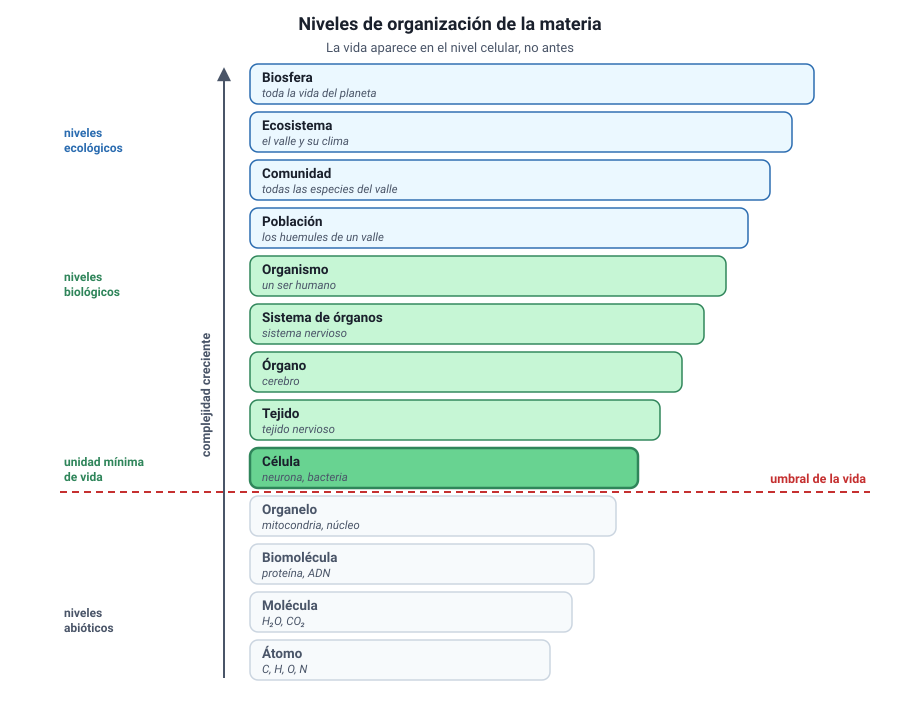
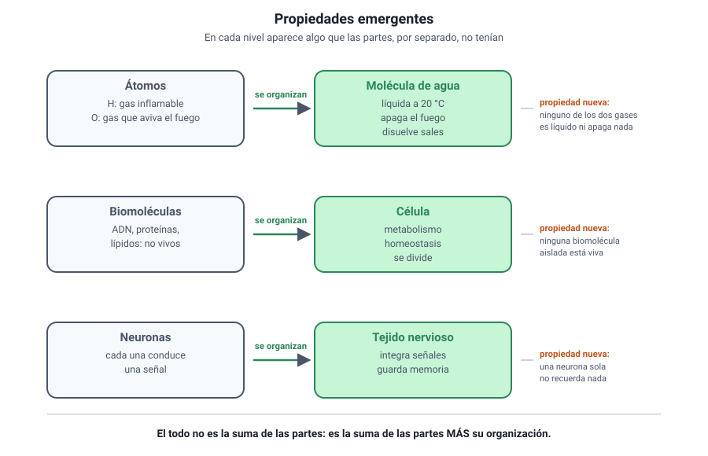
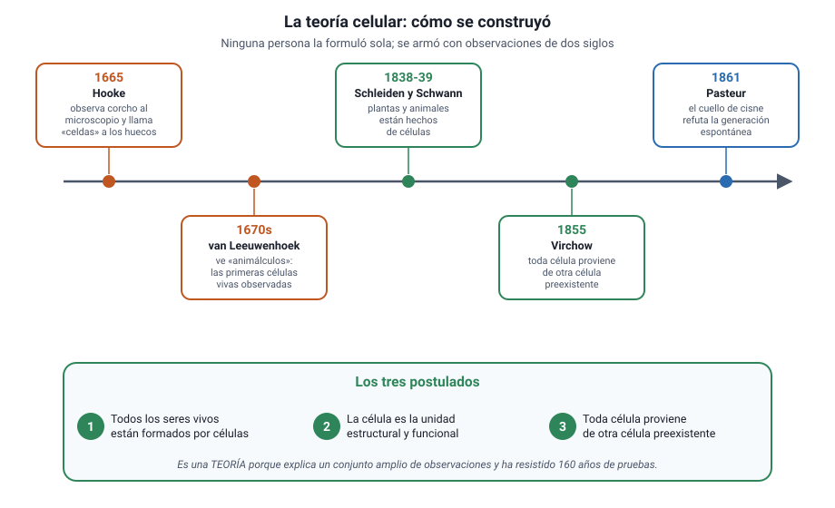
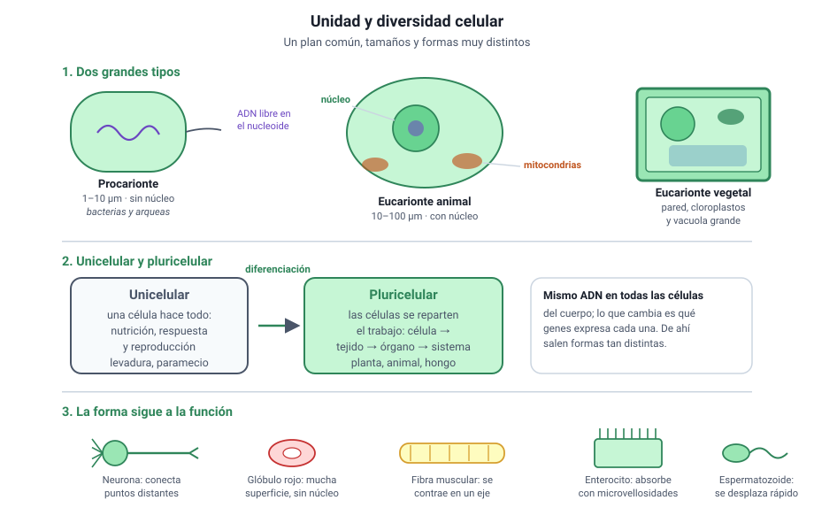
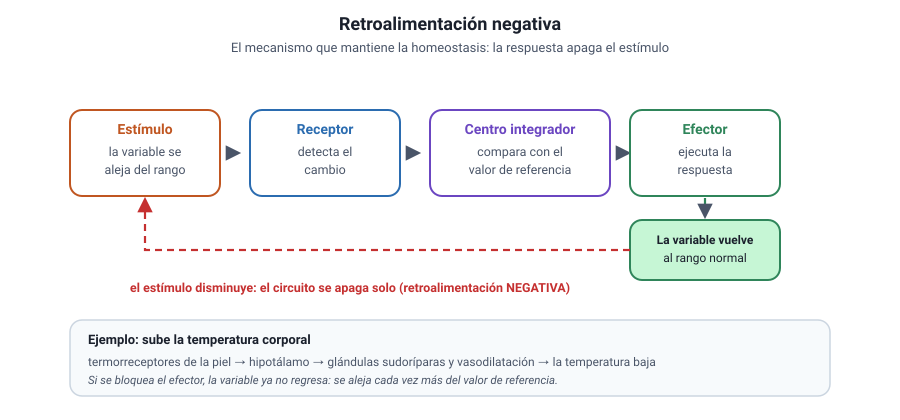

Capítulo 2: Niveles de organización y teoría celular
Área temática: Organización, estructura y actividad celular
Un átomo de carbono no está vivo. Una molécula de proteína tampoco. Una célula, en cambio, sí. En algún punto entre esos tres niveles aparece algo que no estaba antes, y ese salto es el asunto de este capítulo: cómo la materia se organiza en niveles y por qué en cada nivel surgen propiedades que sus partes, por separado, no tienen.
Aquí vas a aprender cuáles son los niveles de organización de la materia viva y en qué orden van; qué son las propiedades emergentes y por qué explican que un organismo sea más que la suma de sus células; qué dice la teoría celular, cómo se construyó y por qué es una teoría y no una hipótesis; cómo se ordena la diversidad celular dentro de esa unidad; y cuáles son las características que comparten todos los sistemas biológicos.
Este capítulo es de apoyo: el temario DEMRE 2027 no lo lista como contenido propio, pero sostiene el área «Organización, estructura y actividad celular», que se desarrolla en el capítulo 4, y da el vocabulario que la prueba usa en muchos enunciados.
1. Conceptos claveIA:12
| Concepto | Definición |
|---|---|
| Nivel de organización | Cada uno de los grados de complejidad creciente en que se ordena la materia, desde el átomo hasta la biosfera |
| Átomo | Unidad más pequeña de un elemento químico que conserva sus propiedades |
| Molécula | Conjunto de átomos unidos por enlaces químicos |
| Biomolécula | Molécula propia de los seres vivos: agua, sales, carbohidratos, lípidos, proteínas y ácidos nucleicos |
| Organelo | Estructura especializada del interior de la célula, con una función definida |
| Célula | Unidad estructural y funcional de los seres vivos; el primer nivel que está vivo |
| Tejido | Conjunto de células semejantes que cumplen una misma función |
| Órgano | Conjunto de tejidos distintos que trabajan de forma coordinada |
| Sistema de órganos | Conjunto de órganos que participan en una misma función general |
| Organismo | Individuo completo, capaz de vivir de manera independiente |
| Población | Conjunto de individuos de la misma especie que viven en un lugar y momento dados |
| Comunidad | Conjunto de poblaciones de especies distintas que conviven en un mismo lugar |
| Ecosistema | Comunidad junto con el ambiente físico con el que intercambia materia y energía |
| Biosfera | Conjunto de todos los ecosistemas del planeta |
| Propiedad emergente | Propiedad que aparece en un nivel y que no poseen sus componentes por separado |
| Reduccionismo | Estrategia de estudiar un sistema analizando sus partes por separado |
| Teoría celular | Teoría que sostiene que todos los seres vivos están formados por células, que la célula es la unidad de vida y que toda célula proviene de otra célula |
| Generación espontánea | Idea, hoy descartada, de que los seres vivos podían surgir de materia inerte |
| Procarionte | Célula sin núcleo definido ni organelos membranosos |
| Eucarionte | Célula con núcleo delimitado por envoltura y con organelos membranosos |
| Unicelular | Organismo formado por una sola célula |
| Pluricelular | Organismo formado por muchas células, habitualmente especializadas |
| Diferenciación celular | Proceso por el cual una célula adquiere una forma y una función especializadas |
| Metabolismo | Conjunto de reacciones químicas que ocurren en un organismo |
| Homeostasis | Mantención de condiciones internas estables frente a cambios del ambiente |
| Irritabilidad | Capacidad de detectar estímulos y responder a ellos |
| Adaptación | Característica heredable que mejora la supervivencia o la reproducción en un ambiente dado |
| Sistema abierto | Sistema que intercambia materia y energía con su entorno, como todo ser vivo |
2. Los niveles de organizaciónIA:34

a. La escalera completaIA:567
La materia viva se ordena en niveles de complejidad creciente. Cada nivel está formado por unidades del nivel anterior, y en cada paso aparece algo nuevo.
| Nivel | Qué es | Ejemplo |
|---|---|---|
| Átomo | Unidad de un elemento químico | Un átomo de carbono |
| Molécula | Átomos unidos por enlaces | Agua, H2O |
| Biomolécula | Molécula característica de los seres vivos | Una proteína, un fosfolípido |
| Organelo | Estructura con función propia dentro de la célula | Mitocondria, cloroplasto |
| Célula | Primer nivel con vida | Un glóbulo rojo, una bacteria |
| Tejido | Células semejantes con una misma función | Tejido muscular |
| Órgano | Varios tejidos coordinados | Corazón, hoja |
| Sistema de órganos | Órganos con una función común | Sistema circulatorio |
| Organismo | Individuo completo | Una persona, un roble |
| Población | Individuos de la misma especie en un lugar | Los copihues de un bosque |
| Comunidad | Poblaciones distintas que conviven | Todas las especies de ese bosque |
| Ecosistema | Comunidad más el ambiente físico | El bosque con su suelo, agua y clima |
| Biosfera | Todos los ecosistemas del planeta | La Tierra habitada |
Dónde empieza la vida. El primer nivel que cumple todas las características de un ser vivo es la célula. Un organelo aislado no se reproduce ni mantiene su medio interno; una mitocondria fuera de la célula deja de funcionar. Por eso la célula es la unidad de vida, y no la molécula ni el organelo.
b. Dónde se corta la escaleraIA:8910
No todos los organismos pasan por todos los niveles.
- Una bacteria es un organismo unicelular: en ella, el nivel «célula» y el nivel «organismo» coinciden. No tiene tejidos ni órganos.
- Una esponja tiene células especializadas, pero no verdaderos órganos.
- Un ser humano recorre la escalera completa.
El error más frecuente. Suponer que todo organismo tiene tejidos y órganos. Si un ítem pregunta qué niveles están presentes en un organismo unicelular, la respuesta no incluye tejido, órgano ni sistema de órganos.
c. Niveles biológicos y niveles ecológicosIA:111213
Conviene notar que la escalera cambia de naturaleza a mitad de camino:
- Del átomo al organismo, los niveles describen cómo está construido un individuo.
- De la población a la biosfera, describen cómo se relacionan los individuos entre sí y con el ambiente.
El organismo es la bisagra: es la última unidad que existe como individuo y la primera que forma parte de conjuntos mayores. Por eso los capítulos 4 a 7 de este libro se mueven en la primera mitad de la escalera y el capítulo 10, en la segunda.
3. Las propiedades emergentesIA:1415

a. Qué es una propiedad emergenteIA:161718
Una propiedad emergente es una característica que aparece en un nivel de organización y que ninguno de sus componentes posee por separado. No se trata de una suma, sino de algo nuevo que resulta de la interacción entre las partes.
Tres ejemplos que la prueba usa con frecuencia:
| Nivel | Componentes | Propiedad emergente |
|---|---|---|
| Molécula | Hidrógeno y oxígeno, ambos gases | El agua es líquida a temperatura ambiente y disuelve sales |
| Célula | Agua, lípidos, proteínas, ácidos nucleicos | Está viva: se nutre, responde y se reproduce |
| Tejido nervioso | Neuronas individuales | Conduce y procesa información de forma coordinada |
La frase que resume la idea. El todo es distinto de la suma de sus partes. No mayor ni mejor: distinto, porque tiene propiedades que no existen en el nivel inferior. Y esas propiedades desaparecen si se desarma el conjunto: separadas, las neuronas no forman un pensamiento y las biomoléculas no están vivas.
b. Por qué esto importa para estudiar biologíaIA:192021
De aquí se sigue una consecuencia metodológica. Estudiar un sistema desarmándolo en sus partes —lo que se llama reduccionismo— es útil y ha dado casi todo lo que sabemos de bioquímica y de genética. Pero no basta: hay preguntas que solo pueden responderse en el nivel donde la propiedad aparece.
- Para saber cómo una enzima cataliza una reacción, hay que aislarla y estudiar sus partes.
- Para saber por qué un ecosistema se vuelve inestable al perder una especie, hay que estudiar el ecosistema completo.
Los dos enfoques son necesarios y responden preguntas distintas.
c. Cómo se reconoce en una preguntaIA:222324
Los ítems sobre propiedades emergentes suelen tener esta forma: describen una característica y preguntan en qué nivel aparece, o piden identificar cuál de varias afirmaciones ilustra una emergencia.
La prueba que conviene aplicar. Pregúntate si la propiedad existe en las partes aisladas. Si la respuesta es no, es emergente. La conducción del impulso nervioso, por ejemplo, sí existe en una neurona aislada: no es emergente del tejido. En cambio, procesar información coordinando miles de neuronas, sí lo es.
4. La teoría celularIA:2526

a. Los tres postuladosIA:272829
La teoría celular sostiene tres cosas:
- Todos los seres vivos están formados por una o más células.
- La célula es la unidad estructural y funcional de la vida, es decir, la unidad más pequeña capaz de realizar todas las funciones vitales.
- Toda célula proviene de otra célula preexistente.
El tercer postulado es el más tardío y el que más cuesta: implica que no hay generación espontánea, que la vida actual desciende de células anteriores y, llevado al extremo, que existe una continuidad ininterrumpida desde las primeras células hasta hoy.
b. Cómo se construyóIA:303132
| Momento | Quién | Qué aportó |
|---|---|---|
| 1665 | Robert Hooke | Observa láminas de corcho al microscopio y llama «celdas» a los compartimientos vacíos que ve. En realidad eran paredes de células muertas |
| Década de 1670 | Antonie van Leeuwenhoek | Con lentes propias observa organismos vivos y móviles en agua, saliva y sarro: los primeros microorganismos descritos |
| 1838 y 1839 | Matthias Schleiden y Theodor Schwann | Generalizan: las plantas y los animales están formados por células. Es el primer enunciado de la teoría |
| 1855 | Rudolf Virchow | Formula el tercer postulado: toda célula proviene de otra célula |
| 1861 | Louis Pasteur | Con sus matraces de cuello de cisne refuta experimentalmente la generación espontánea |
Por qué es una teoría y no una hipótesis. No porque sea una suposición, sino al revés: una teoría científica es una explicación amplia, sostenida por muchísima evidencia independiente, que organiza un campo entero. La teoría celular lleva casi dos siglos resistiendo pruebas y ninguna observación la ha contradicho. El capítulo 1 desarrolla esta distinción, que la PAES pregunta con frecuencia.
c. El experimento que cerró la discusiónIA:333435
El diseño de Pasteur es un caso de estudio del capítulo 1 y conviene tenerlo claro, porque combina teoría celular y método científico.
- Problema: ¿pueden los microorganismos surgir espontáneamente de un caldo nutritivo?
- Diseño: hirvió caldo en matraces con el cuello estirado en forma de S. El aire entraba, pero el polvo y los microorganismos quedaban atrapados en la curva.
- Resultado: el caldo permanecía estéril indefinidamente. Al inclinar el matraz para que el líquido tocara la curva, o al romper el cuello, aparecían microorganismos en poco tiempo.
- Conclusión: los microorganismos no surgen del caldo; llegan desde fuera.
Lo que hace elegante a ese experimento. El cuello de cisne permite separar dos variables que hasta entonces iban juntas: el contacto con el aire y la entrada de microorganismos. Quienes defendían la generación espontánea sostenían que hervir destruía algo del aire; el diseño de Pasteur deja entrar el aire y aun así no aparece nada. Ese es el tipo de control que la PAES pide reconocer.
d. Las excepciones aparentesIA:363738
Dos casos que la prueba usa para poner a prueba la comprensión de la teoría:
- Los virus. No están formados por células, no tienen metabolismo propio y solo se multiplican dentro de una célula que infectan. Por eso la mayoría de los autores no los considera seres vivos, y no constituyen una excepción a la teoría celular, sino un caso fuera de ella.
- La primera célula. Si toda célula proviene de otra, ¿de dónde salió la primera? La teoría celular describe lo que ocurre hoy en los seres vivos; el origen de la vida es una pregunta distinta, que se estudia con otras herramientas y que el capítulo 9 aborda al tratar la historia de la vida.
5. Unidad y diversidad celularIA:3940

a. Lo que todas las células compartenIA:414243
Por distintas que sean, todas las células tienen cuatro cosas:
- Membrana plasmática, que las separa del medio y controla lo que entra y sale.
- Citoplasma, el medio interno donde ocurren las reacciones.
- Material genético, ADN que contiene las instrucciones.
- Ribosomas, donde se fabrican las proteínas.
Esa coincidencia no es casual: es una de las evidencias de que todos los seres vivos comparten un ancestro común, como verás en el capítulo 9.
b. Dos grandes tiposIA:444546
| Procarionte | Eucarionte | |
|---|---|---|
| Núcleo definido | No: el ADN está en el citoplasma, en una zona llamada nucleoide | Sí, rodeado por envoltura nuclear |
| Organelos membranosos | No | Sí: mitocondrias, retículo, Golgi y otros |
| Tamaño habitual | 1 a 10 µm | 10 a 100 µm |
| Ejemplos | Bacterias y arqueas | Protozoos, hongos, plantas y animales |
El capítulo 4 desarrolla esta comparación en detalle; aquí basta con el criterio que las separa: la presencia o ausencia de un núcleo delimitado por membrana.
c. Unicelulares y pluricelularesIA:474849
| Unicelular | Pluricelular | |
|---|---|---|
| Número de células | Una | Muchas |
| Especialización | La única célula hace todo | Las células se diferencian y se reparten el trabajo |
| Niveles presentes | Célula = organismo | Célula, tejido, órgano, sistema, organismo |
| Ejemplos | Bacterias, levaduras, paramecios | Plantas, animales, hongos pluricelulares |
La diferenciación celular es la clave de lo pluricelular. Todas las células de tu cuerpo tienen el mismo ADN, pero una neurona y un glóbulo blanco no se parecen en nada. La diferencia no está en los genes que tienen, sino en cuáles expresan. Esa idea se desarrolla en el capítulo 6, y explica por qué la forma de una célula permite deducir su función, como verás en el capítulo 4.
d. La forma sigue a la funciónIA:505152
La diversidad de formas celulares no es arbitraria. Cada tipo de célula tiene la forma que su tarea exige:
| Célula | Forma característica | Para qué |
|---|---|---|
| Neurona | Prolongaciones muy largas | Conectar puntos distantes del cuerpo |
| Glóbulo rojo | Disco bicóncavo, sin núcleo | Maximizar superficie y transportar oxígeno |
| Célula muscular | Alargada y con filamentos ordenados | Contraerse en un solo eje |
| Espermatozoide | Flagelo y casi sin citoplasma | Desplazarse rápido |
| Enterocito | Con microvellosidades en la cara libre | Aumentar la superficie de absorción |
Cómo se pregunta. La PAES rara vez pide el nombre de una célula: pide inferir la función a partir de la forma, o al revés. Ante una célula con mucha superficie, piensa en absorción o intercambio; ante muchas mitocondrias, en gasto de energía; ante mucho retículo rugoso, en producción de proteínas para exportar.
6. Características de los sistemas biológicosIA:5354
Si la célula es la unidad de lo vivo, ¿qué hace que algo esté vivo? No hay una sola propiedad que baste: lo vivo se reconoce por un conjunto de características que aparecen juntas. Un cristal crece pero no se reproduce; un virus tiene material genético pero no metabolismo propio. La vida es el paquete completo.
a. Las siete característicasIA:555657
| Característica | En qué consiste | Ejemplo |
|---|---|---|
| Organización | Estructura ordenada en niveles jerárquicos, con la célula como unidad | Un músculo: filamentos en células, células en fibras, fibras en tejido |
| Metabolismo | Conjunto de reacciones que transforman materia y energía | La respiración celular degrada glucosa y libera energía utilizable |
| Homeostasis | Mantención del medio interno dentro de un rango estrecho, pese a los cambios externos | La temperatura corporal se mantiene cerca de 37 °C con frío o calor |
| Irritabilidad | Capacidad de detectar estímulos y responder a ellos | La pupila se contrae con luz intensa |
| Crecimiento y desarrollo | Aumento de tamaño y cambio ordenado de forma y función a lo largo del tiempo | Un embrión se divide, se diferencia y forma órganos |
| Reproducción | Generación de nuevos individuos, con transmisión del material genético | Una bacteria se divide; un helecho produce esporas |
| Adaptación y evolución | Cambio de las poblaciones a través de las generaciones, por selección natural | Bacterias de una población que resisten un antibiótico dejan más descendencia |
Ojo con dos confusiones frecuentes. La adaptación evolutiva ocurre en poblaciones y a lo largo de generaciones: un individuo no se adapta, se aclimata. Y el crecimiento de un ser vivo no es lo mismo que el de un cristal: el cristal suma material desde fuera, el organismo lo incorpora, lo transforma y lo integra a su propia estructura.
b. Los seres vivos son sistemas abiertosIA:585960
Un sistema abierto intercambia materia y energía con su entorno. Todos los seres vivos lo son, y no podrían ser de otro modo: ninguno fabrica su propia materia de la nada ni recicla su energía indefinidamente.
- Entra: nutrientes, agua, gases y —en los autótrofos— energía luminosa.
- Sale: desechos, agua, gases y calor, siempre calor.
Ese flujo constante es lo que permite mantener el orden interno. Un organismo aislado de su entorno pierde primero la homeostasis y después la organización: la muerte es, en términos físicos, el fin del intercambio.
Un caso para decidir si está vivo. En una expedición se encuentra una estructura esférica de 2 µm que contiene ADN, una envoltura lipídica y ribosomas, y que aumenta su masa cuando se la incuba con glucosa y sales. Con esos datos hay organización, metabolismo y crecimiento, pero no hay evidencia de reproducción ni de respuesta a estímulos. La conclusión correcta no es «está vivo» ni «no está vivo», sino que la evidencia disponible es insuficiente y que el experimento siguiente debe buscar división celular en un cultivo prolongado.
c. Homeostasis: el mecanismo que la sostieneIA:616263

La homeostasis no es inmovilidad, es regulación. Funciona casi siempre mediante retroalimentación negativa: una desviación de la variable regulada activa una respuesta que la devuelve al rango normal.
- Un receptor detecta el cambio (por ejemplo, termorreceptores de la piel).
- Un centro integrador compara el valor detectado con un valor de referencia (el hipotálamo).
- Un efector ejecuta la respuesta (glándulas sudoríparas, músculos, vasos sanguíneos).
- El cambio resultante reduce el estímulo original: el circuito se apaga solo.
Cómo se pregunta. Un gráfico muestra una variable que oscila en torno a un valor y una flecha que indica una perturbación. Lo que se pide es identificar la variable regulada, el efector, o predecir qué pasa si se bloquea uno de los pasos. Si al bloquear un paso la variable se va cada vez más lejos del valor de referencia, el circuito era de retroalimentación negativa.
Ejemplos PAES resueltos
Cuatro ítems al estilo de la prueba, resueltos paso a paso. Cúbrelos primero y después compara.
Ejemplo 1 (Procesar y analizar la evidencia). Una investigadora describe una muestra recogida en un lago:
| Observación | Resultado |
|---|---|
| Tamaño de las unidades | 2 µm de diámetro |
| Material genético | ADN circular, sin envoltura que lo rodee |
| Ribosomas | Presentes |
| Organelos con membrana | Ausentes |
| Multiplicación en cultivo | Sí, cada 40 minutos |
¿Qué nivel de organización y qué tipo celular corresponden a esta muestra?
A) Nivel molecular; no corresponde clasificarla como célula. B) Nivel celular; célula procarionte. C) Nivel celular; célula eucarionte. D) Nivel de tejido; conjunto de células eucariontes.
Desarrollo. Conviene ir descartando con un criterio por vez.
- ¿Es una célula? Tiene material genético, ribosomas, un tamaño del orden de los micrómetros y se multiplica. Cumple con lo que define a una célula, así que A queda fuera: el nivel molecular es el de las biomoléculas aisladas, que no se dividen.
- ¿Procarionte o eucarionte? El dato decisivo es «ADN sin envoltura que lo rodee» y «organelos con membrana ausentes». Eso es exactamente la definición de procarionte, de modo que C se descarta.
- ¿Hay tejido? Un tejido exige células diferenciadas que cooperan dentro de un organismo pluricelular. Aquí hay células sueltas que se dividen en cultivo, no un tejido: D también cae.
Clave: B.
Lo que evalúa. Que apliques el criterio que separa procarionte de eucarionte —la envoltura nuclear— y que no confundas «muchas células juntas» con «tejido».
Ejemplo 2 (Evaluar). Un estudiante afirma: «La teoría celular es solo una hipótesis, porque nadie ha visto nacer la primera célula».
¿Cuál de las siguientes es la mejor evaluación de esa afirmación?
A) Es correcta, porque una idea que no se ha observado directamente no puede ser una teoría. B) Es incorrecta, porque la teoría celular ya fue demostrada y por eso pasó a ser una ley. C) Es incorrecta, porque una teoría explica un conjunto amplio de observaciones puestas a prueba, y el origen de la primera célula es una pregunta distinta. D) Es correcta, porque mientras existan excepciones como los virus la teoría no puede sostenerse.
Desarrollo. Aquí se mezclan tres confusiones frecuentes y hay que separarlas.
- «Teoría» no significa «suposición». En ciencia una teoría es una explicación amplia, apoyada en mucha evidencia y capaz de hacer predicciones. La hipótesis es la idea puntual que se pone a prueba en una investigación. Eso descarta A.
- Una teoría no «asciende» a ley. Ley y teoría son cosas distintas, no etapas de una carrera: la ley describe una regularidad, la teoría explica por qué ocurre. Por eso B es falsa.
- El origen de la primera célula es otro problema. La teoría celular describe cómo se originan las células hoy; el origen de la vida es una pregunta aparte, y no la invalida. Los virus tampoco: no son células, así que quedan fuera de su alcance, y eso hace falsa a D.
Clave: C.
Lo que evalúa. El uso correcto de «teoría», «ley» e «hipótesis», que la PAES pregunta en todas las unidades y no solo en el capítulo de método científico.
Ejemplo 3 (Observar y plantear preguntas). En un experimento se separa un tejido cardíaco en sus células individuales y se las mantiene vivas en cultivo. Cada célula late, pero lo hace con un ritmo propio y desordenado. Al volver a ponerlas en contacto, todas terminan latiendo al mismo ritmo.
¿Cuál es la pregunta que mejor orienta una investigación a partir de esta observación?
A) ¿Cuántas células cardíacas tiene un corazón humano adulto? B) ¿Qué tipo de contacto entre células cardíacas permite que sincronicen su ritmo? C) ¿Es el corazón un órgano o un sistema de órganos? D) ¿Por qué el corazón humano es más grande que el de un ratón?
Desarrollo. La observación central es que el ritmo común aparece solo cuando las células se juntan: es una propiedad emergente.
- Una buena pregunta de investigación debe poder responderse con evidencia y debe apuntar a lo que la observación hace nuevo. B hace exactamente eso: propone indagar el mecanismo del contacto, algo que se puede bloquear experimentalmente y medir.
- A se responde contando: es un dato, no una investigación sobre lo observado.
- C se responde con una definición, no con un experimento.
- D cambia de tema: introduce una comparación entre especies que la observación no plantea.
Clave: B.
Lo que evalúa. Distinguir una pregunta investigable de una pregunta de dato o de definición, y reconocer una propiedad emergente cuando aparece descrita en un montaje experimental.
Ejemplo 4 (Planificar y conducir una investigación). Un grupo quiere poner a prueba el postulado «toda célula proviene de otra célula preexistente» en un caldo nutritivo. Dispone de matraces, un autoclave y filtros de aire.
¿Cuál de los siguientes diseños permite responder mejor la pregunta?
A) Hervir el caldo en dos matraces y dejar ambos abiertos al aire. B) Hervir el caldo en dos matraces y sellar ambos herméticamente. C) Hervir el caldo en dos matraces: uno se sella y el otro se deja abierto al aire sin filtro. D) Hervir el caldo en dos matraces: uno se deja abierto con un filtro que impide el paso de partículas y el otro se deja abierto sin filtro.
Desarrollo. El punto delicado es que la explicación rival —la generación espontánea— sostenía que el aire era necesario para que la vida surgiera.
- A y B no comparan nada: ambos matraces reciben el mismo tratamiento, así que no hay variable independiente.
- C sí compara, pero tiene un problema: el matraz sellado no solo queda sin microorganismos, también queda sin aire. Si no aparece nada, siempre se podrá objetar que faltó el aire. Las dos variables están confundidas.
- D deja entrar aire en ambos matraces y hace variar solo la llegada de partículas. Si el matraz con filtro permanece limpio y el otro se contamina, la única explicación posible es que los microorganismos vinieron de fuera.
Clave: D. Es, en esencia, el diseño del cuello de cisne de Pasteur.
Lo que evalúa. Identificar una variable confundida y reconocer que un buen control debe dejar constante aquello que la explicación rival considera necesario.
Evaluación formativa
Veinte preguntas sobre niveles de organización, propiedades emergentes, teoría celular, diversidad celular y características de los seres vivos. Responde todas y luego revisa las explicaciones.
1. ¿Cuál es el orden correcto de los niveles de organización, de menor a mayor complejidad?
- Átomo, molécula, célula, organelo, tejido, órgano.
- Molécula, átomo, organelo, célula, órgano, tejido.
- Átomo, molécula, organelo, célula, tejido, órgano.
- Célula, organelo, molécula, átomo, tejido, órgano.
Respuesta correcta: C
Cada nivel se construye con unidades del anterior: los átomos forman moléculas, las moléculas forman organelos, los organelos forman células, las células forman tejidos y los tejidos forman órganos. Los errores típicos son poner el organelo después de la célula o el órgano antes del tejido.
2. ¿En qué nivel de organización aparece por primera vez la vida?
- En el nivel molecular, porque el ADN contiene la información.
- En el nivel celular, porque la célula es la unidad mínima capaz de realizar todas las funciones vitales.
- En el nivel de organelo, porque la mitocondria produce energía.
- En el nivel de tejido, porque las células deben cooperar para estar vivas.
Respuesta correcta: B
Ni una molécula ni un organelo aislado se nutren, responden y se reproducen por sí mismos; la célula sí. Por debajo del nivel celular no hay vida, y por encima la hay, pero ya no es el nivel mínimo. Muchos organismos, como las bacterias, están vivos sin formar ningún tejido.
3. El hidrógeno es un gas inflamable y el oxígeno aviva la combustión, pero el agua apaga el fuego. ¿Qué concepto ilustra este hecho?
- La homeostasis, porque el agua mantiene condiciones estables.
- El reduccionismo, porque el agua se explica por sus átomos.
- La adaptación, porque la molécula cambió con el tiempo.
- Una propiedad emergente, porque la molécula tiene una propiedad que sus átomos no tienen.
Respuesta correcta: D
Una propiedad emergente aparece cuando las partes se organizan de una manera determinada y no puede deducirse mirando a cada parte por separado. El reduccionismo es justamente la estrategia contraria: estudiar el todo descomponiéndolo en sus partes.
4. ¿Cuál de las siguientes afirmaciones describe mejor la relación entre un organismo y sus células?
- El organismo tiene propiedades que ninguna de sus células tiene por separado.
- El organismo es exactamente la suma aritmética de las funciones de sus células.
- El organismo tiene menos propiedades que sus células, porque las restringe.
- El organismo y sus células tienen exactamente las mismas propiedades.
Respuesta correcta: A
La organización agrega propiedades: ninguna neurona aislada guarda un recuerdo ni ninguna célula muscular sola levanta un brazo. Por eso se dice que el todo es la suma de las partes más su organización, y no una simple suma.
5. ¿Cuál de los siguientes es un nivel de organización ecológico y no un nivel biológico dentro de un individuo?
- El tejido epitelial del intestino.
- El sistema circulatorio de un mamífero.
- El conjunto de todos los huemules de un valle.
- El hígado de un pez.
Respuesta correcta: C
Todos los individuos de una misma especie que conviven en un lugar y momento forman una población, el primer nivel ecológico. Tejidos, órganos y sistemas de órganos están dentro de un organismo individual.
6. Robert Hooke, en 1665, observó cortes de corcho al microscopio y llamó «celdas» a lo que vio. ¿Qué observaba realmente?
- Células vivas en plena división.
- Paredes celulares vacías de células vegetales muertas.
- Núcleos de células animales.
- Bacterias adheridas a la superficie del corcho.
Respuesta correcta: B
El corcho es tejido muerto: lo que quedaba eran las paredes de celulosa, que delimitaban huecos vacíos parecidos a las celdas de un monasterio. Hooke no vio contenido vivo ni supo qué función cumplían esas estructuras; las primeras células vivas las observó van Leeuwenhoek pocos años después.
7. ¿Cuál de los tres postulados de la teoría celular aportó Rudolf Virchow en 1855?
- Que toda célula proviene de otra célula preexistente.
- Que todos los seres vivos están formados por células.
- Que la célula es la unidad estructural de los organismos.
- Que las células contienen material genético.
Respuesta correcta: A
Virchow resumió el tercer postulado en la frase omnis cellula e cellula. Los dos primeros venían de Schleiden y Schwann, en 1838 y 1839. La presencia de material genético no es un postulado de la teoría celular: se estableció mucho después.
8. En el experimento del cuello de cisne, Pasteur hirvió caldo en matraces cuyo cuello curvado dejaba pasar el aire pero retenía las partículas. El caldo se mantuvo estéril hasta que se rompió el cuello. ¿Por qué ese diseño era mejor que sellar el matraz?
- Porque permitía hervir el caldo durante más tiempo.
- Porque el vidrio curvado aumenta la esterilización por calor.
- Porque evitaba que el caldo se evaporara durante el experimento.
- Porque dejaba entrar aire y así descartaba la objeción de que faltaba el aire necesario para la vida.
Respuesta correcta: D
Quienes defendían la generación espontánea sostenían que el aire era imprescindible. Un matraz sellado habría confundido dos variables a la vez: la ausencia de partículas y la ausencia de aire. El cuello de cisne deja variar solo la llegada de partículas, y por eso el resultado es concluyente.
9. ¿Por qué la teoría celular es una teoría y no una hipótesis?
- Porque todavía no ha podido comprobarse.
- Porque fue propuesta por varios científicos a la vez.
- Porque explica un conjunto amplio de observaciones y ha resistido numerosas pruebas independientes.
- Porque describe una regularidad que puede expresarse con una fórmula matemática.
Respuesta correcta: C
Una hipótesis es una respuesta tentativa a una pregunta concreta; una teoría es una explicación amplia, sostenida por mucha evidencia y capaz de hacer predicciones. La alternativa D describe más bien una ley científica, que describe una regularidad sin explicarla.
10. ¿Por qué los virus se consideran una excepción aparente a la teoría celular?
- Porque son células muy pequeñas sin material genético.
- Porque no son células: carecen de metabolismo propio y solo se replican dentro de una célula hospedera.
- Porque son células procariontes que perdieron su pared celular.
- Porque se originan espontáneamente a partir de moléculas del medio.
Respuesta correcta: B
Un virus tiene material genético y una cubierta de proteínas, pero no membrana plasmática funcional, ni citoplasma con metabolismo, ni ribosomas propios. Como no es una célula, queda fuera del alcance de la teoría celular en lugar de contradecirla.
11. ¿Qué estructuras están presentes en absolutamente todas las células conocidas?
- Membrana plasmática, citoplasma, material genético y ribosomas.
- Núcleo, mitocondrias, membrana plasmática y ribosomas.
- Pared celular, cloroplastos, núcleo y vacuola.
- Aparato de Golgi, retículo endoplasmático, núcleo y citoesqueleto.
Respuesta correcta: A
Esas cuatro estructuras aparecen tanto en procariontes como en eucariontes, y su universalidad es una de las evidencias de un ancestro común. Núcleo, mitocondrias, Golgi y retículo son exclusivos de los eucariontes; pared y cloroplastos, de algunos grupos.
12. ¿Cuál es el criterio que separa a una célula procarionte de una eucarionte?
- La presencia o ausencia de pared celular.
- La capacidad o incapacidad de realizar fotosíntesis.
- Pertenecer a un organismo unicelular o a uno pluricelular.
- La presencia o ausencia de un núcleo delimitado por envoltura nuclear.
Respuesta correcta: D
Hay procariontes y eucariontes con pared celular y sin ella, fotosintéticos y no fotosintéticos, unicelulares y pluricelulares. Lo único que separa de manera sistemática a los dos grupos es si el ADN está encerrado en una envoltura nuclear.
13. Una levadura es un hongo unicelular. ¿Qué implica eso respecto de sus funciones vitales?
- Que no puede reproducirse sin asociarse a otras levaduras.
- Que una sola célula realiza todas las funciones vitales del organismo.
- Que sus células están diferenciadas en tejidos especializados.
- Que carece de núcleo, por ser unicelular.
Respuesta correcta: B
En un organismo unicelular la célula y el organismo son lo mismo, de modo que esa única célula se nutre, responde a estímulos y se reproduce. Ser unicelular no dice nada sobre tener núcleo: la levadura es eucarionte.
14. Todas las células de tu cuerpo tienen el mismo ADN, pero una neurona y una célula muscular son muy distintas. ¿Cómo se explica esa diferencia?
- Cada tipo celular pierde los genes que no necesita.
- Cada tipo celular recibe una copia distinta del ADN al dividirse.
- Cada tipo celular expresa un conjunto distinto de genes.
- Cada tipo celular adquiere su ADN del tejido que lo rodea.
Respuesta correcta: C
La diferenciación celular no cambia el contenido del ADN: cambia qué genes se activan y cuáles permanecen silenciados. Por eso el genoma es el mismo y los conjuntos de proteínas son completamente distintos.
15. Una célula presenta la cara libre cubierta de prolongaciones finas y numerosas que multiplican su superficie. ¿Qué función se infiere con mayor respaldo?
- Absorción de nutrientes desde el medio.
- Contracción rápida en un solo eje.
- Conducción de señales a larga distancia.
- Almacenamiento de agua en su interior.
Respuesta correcta: A
Una superficie muy aumentada apunta a intercambio o absorción, como ocurre en el enterocito con sus microvellosidades. La contracción requiere filamentos ordenados, la conducción de señales requiere prolongaciones largas y el almacenamiento, una vacuola grande.
16. ¿Cuál de las siguientes características NO permite por sí sola distinguir un ser vivo de un objeto inanimado?
- La homeostasis.
- El metabolismo.
- La reproducción.
- El aumento de tamaño.
Respuesta correcta: D
Un cristal aumenta de tamaño sumando material desde fuera, y una estalactita también. El crecimiento de un ser vivo es distinto porque incorpora materia, la transforma y la integra a su propia estructura, pero el simple aumento de tamaño no basta como criterio.
17. ¿Por qué se dice que los seres vivos son sistemas abiertos?
- Porque cualquier organismo puede entrar y salir de ellos.
- Porque intercambian materia y energía con el entorno de manera continua.
- Porque no tienen ninguna barrera que los separe del medio.
- Porque conservan indefinidamente la energía que recibieron al nacer.
Respuesta correcta: B
Entran nutrientes, agua y gases, y salen desechos, gases y calor. Ese flujo constante es lo que permite mantener el orden interno. La membrana sí constituye una barrera, pero una barrera selectiva, no un aislamiento.
18. En un circuito de retroalimentación negativa que regula la temperatura corporal, ¿qué componente corresponde a las glándulas sudoríparas?
- El receptor, porque detectan el calor de la piel.
- El centro integrador, porque deciden cuánto sudor producir.
- El efector, porque ejecutan la respuesta que devuelve la variable al rango.
- El valor de referencia, porque fijan la temperatura normal.
Respuesta correcta: C
Los termorreceptores detectan el cambio, el hipotálamo compara con el valor de referencia y las glándulas sudoríparas ejecutan la respuesta. Al evaporarse, el sudor baja la temperatura y con ello reduce el estímulo original: el circuito se apaga solo.
19. Se bloquea con un fármaco el efector de un circuito homeostático. ¿Qué se predice que ocurrirá con la variable regulada frente a una perturbación?
- Se alejará progresivamente del valor de referencia, sin corregirse.
- Volverá al valor de referencia más rápido que antes.
- Permanecerá fija en el valor de referencia sin variar.
- Oscilará en torno al valor de referencia igual que antes.
Respuesta correcta: A
Sin efector la respuesta correctora no se ejecuta, de modo que la desviación deja de corregirse y se acumula. Esa predicción es la prueba de que el circuito era de retroalimentación negativa: es lo que se pierde al romperlo.
20. Un estudiante afirma que un individuo «se adapta» al frío de la cordillera durante el mes que pasa allí. ¿Cuál es la corrección conceptual adecuada?
- Ninguna: la adaptación ocurre en los individuos a lo largo de su vida.
- La adaptación solo ocurre en organismos unicelulares.
- La adaptación es un cambio del ADN que el individuo produce al necesitarlo.
- La adaptación evolutiva ocurre en poblaciones y a lo largo de generaciones; lo que hace el individuo es aclimatarse.
Respuesta correcta: D
El individuo responde de manera reversible, por ejemplo produciendo más glóbulos rojos: eso es aclimatación. La adaptación evolutiva es el cambio en la frecuencia de características hereditarias dentro de una población, por selección natural, y no la dirige la necesidad del individuo.
Fuentes del capítulo
Consultadas el 24 de septiembre de 2026. El texto es de redacción propia y los cinco diagramas son originales.
Documentos oficiales
- DEMRE (2026). Temario Regular – Pruebas Electivas – Ciencias. Admisión 2027. Este capítulo no corresponde a un conocimiento listado: es apoyo del área «Organización, estructura y actividad celular» (1.1 y 1.2), que se desarrolla en el capítulo 4, y aporta el vocabulario que la prueba usa en los enunciados.
- DEMRE (2026). Prueba oficial PAES de Invierno, Ciencias – Biología, Admisión 2027, y su clavijero. Se revisó para calibrar el modo en que la prueba usa los términos «teoría», «modelo», «nivel de organización» y «célula», sin reproducir ítems.
- Ministerio de Educación de Chile. Bases Curriculares de Ciencias Naturales, unidades sobre organización de los seres vivos y teoría celular.
Historia de la teoría celular
- National Geographic Education. History of the Cell: Discovering the Cell y Cell Theory: Hooke y el corcho en 1665, van Leeuwenhoek y los «animálculos», Schleiden (1838), Schwann (1839) y Virchow (1855). education.nationalgeographic.org
- Hektoen International (2022). The beginnings of cell theory: Schleiden, Schwann, and Virchow. Origen y alcance de los tres postulados y de la frase omnis cellula e cellula. hekint.org
- Embryo Project Encyclopedia, Arizona State University. Matthias Jacob Schleiden (1804–1881). embryo.asu.edu
- Pereira, H. y otros (2019). «Four hundred years of cork imaging: new advances in the characterization of the cork structure». Scientific Reports. Confirma que lo que Hooke observó fueron paredes celulares vacías de Quercus suber. nature.com
- Museum of the History of Science / Worcester Medical Museums. Pasteur's Swan Neck Flask: diseño del matraz de cuello de cisne y por qué el aire debía poder entrar. medicalmuseum.org.uk
- LibreTexts Biology. Spontaneous Generation y Studying Cells – Cell Theory: el experimento de Pasteur entre 1859 y 1861 y el estado actual de los postulados. bio.libretexts.org
Niveles de organización, propiedades emergentes y características de los seres vivos
- Khan Academy en español. Niveles de organización biológica y Propiedades de la vida: la escalera de átomo a biosfera y el conjunto de características que definen lo vivo. es.khanacademy.org
- OpenStax. Biology 2e, capítulo 1: «The Science of Biology», secciones sobre propiedades de la vida y niveles de organización, incluidos homeostasis, metabolismo y sistemas abiertos. openstax.org
- Portal Académico CCH, Universidad Nacional Autónoma de México. Niveles de organización de la materia viva. portalacademico.cch.unam.mx
Libro de consulta
- Hoefnagels, M. Biology: Concepts and Investigations, 5.ª edición, capítulos 1 y 2 (la ciencia de la biología, características de la vida y niveles de organización). Consulta de referencia; el texto de este capítulo es de redacción propia.
Preguntas de práctica (IA)
Estas 63 preguntas fueron creadas con inteligencia artificial a partir de los contenidos de esta sección; no son del libro. Los números verdes junto a cada título llevan a sus preguntas, y el botón «↩ Ver tema» de cada pregunta te devuelve a la materia que la explica.
Tema: 1. Conceptos clave
1.↩ Ver tema En un glosario se define «propiedad emergente» como una característica que aparece en un nivel de organización y que no está presente en las partes que lo componen. ¿Cuál de los siguientes casos corresponde a esa definición? Procesar y analizar la evidencia Organización, estructura y actividad celular
- Un átomo de carbono tiene siempre seis protones y seis neutrones en su núcleo atómico.
- El ADN de una célula hepática contiene exactamente los mismos genes que el de una neurona.
- Una bacteria mide entre uno y diez micrómetros de largo.
- Una molécula de agua es líquida a 20 °C, aunque el hidrógeno y el oxígeno son gases.
Respuesta correcta: D
Habilidad evaluada. Esta pregunta evalúa la habilidad de procesar y analizar la evidencia: aplicar una definición a casos concretos y reconocer cuál la cumple.
Concepto del libro. Según «Conceptos clave», una propiedad emergente surge de la organización de las partes y no puede deducirse observando cada parte por separado.
Desarrollo. El agua es el ejemplo canónico: ni el hidrógeno ni el oxígeno son líquidos a temperatura ambiente, y ninguno de los dos apaga el fuego, pero el compuesto que forman sí. Las otras tres opciones enuncian hechos verdaderos, pero ninguno describe una propiedad nueva que surja al combinar partes: son datos de composición, de identidad o de tamaño.
Por qué fallan las otras alternativas.
- A) (verdadero pero irrelevante) Es un dato de identidad del átomo, no una propiedad nueva.
- B) (verdadero pero irrelevante) Describe el contenido del genoma, no una propiedad emergente.
- C) (variable equivocada) Indica un tamaño, que no surge de la organización de partes.
Qué hay que saber y saber hacer. Hay que distinguir una propiedad nueva de un simple dato descriptivo. Dato para la PAES: si la propiedad ya estaba en alguna de las partes, no es emergente.
Pregunta creada con IA a partir del contenido de esta sección.
2.↩ Ver tema Para el glosario de un texto escolar hay que definir «homeostasis» en una sola frase dirigida a estudiantes de enseñanza media. ¿Cuál es la definición más adecuada? Comunicar Organización, estructura y actividad celular
- La ausencia de cambios en el interior de un organismo vivo.
- La mantención del medio interno dentro de un rango estrecho, pese a los cambios externos.
- El conjunto de todas las reacciones químicas que ocurren en una célula.
- La capacidad de un organismo de crecer y desarrollarse con el tiempo.
Respuesta correcta: B
Habilidad evaluada. Esta pregunta evalúa la habilidad de comunicar: seleccionar la formulación más precisa de un concepto para un público determinado.
Concepto del libro. Según «Conceptos clave», la homeostasis es la mantención del medio interno dentro de un rango estrecho frente a las variaciones del ambiente.
Desarrollo. La clave está en que la homeostasis no es inmovilidad, sino regulación activa: la variable oscila, y cada desviación activa una respuesta que la devuelve al rango. Decir que no hay cambios es justamente el error conceptual que la definición debe evitar. Las otras dos alternativas definen conceptos distintos que aparecen en el mismo glosario: el metabolismo y el crecimiento.
Por qué fallan las otras alternativas.
- A) (sobre-alcance) La homeostasis regula el cambio; no lo suprime.
- C) (atribución cruzada) Esa es la definición de metabolismo, no de homeostasis.
- D) (atribución cruzada) Describe el crecimiento y el desarrollo, otro concepto del glosario.
Qué hay que saber y saber hacer. Hay que evitar confundir estabilidad regulada con ausencia de cambio. Dato para la PAES: en un gráfico, la homeostasis se ve como una oscilación en torno a un valor, no como una línea plana.
Pregunta creada con IA a partir del contenido de esta sección.
Tema: 2. Los niveles de organización
3.↩ Ver tema Un texto describe una estructura formada por varios tejidos distintos que trabajan juntos para cumplir una función común dentro de un animal. ¿A qué nivel de organización corresponde esa estructura? Procesar y analizar la evidencia Organización, estructura y actividad celular
- Al nivel de órgano, porque varios tejidos cooperan en una función.
- Al nivel de tejido, porque está formada por células de un mismo tipo.
- Al nivel de sistema de órganos, porque interviene más de un tejido distinto.
- Al nivel de organismo, porque cumple por sí sola una función completa.
Respuesta correcta: A
Habilidad evaluada. Esta pregunta evalúa la habilidad de procesar y analizar la evidencia: aplicar la definición de cada nivel a una descripción estructural.
Concepto del libro. Según la sección, un órgano es un conjunto de tejidos distintos que trabajan juntos en una función; un sistema de órganos reúne varios órganos.
Desarrollo. El dato decisivo es «varios tejidos distintos» y «una función común»: eso define un órgano, como el estómago o la hoja. Un tejido está formado por células similares, no por tejidos; un sistema reúne órganos, no tejidos; y un organismo es el individuo completo, con todos sus sistemas. El error frecuente consiste en saltarse el nivel de órgano al ver la palabra «varios».
Por qué fallan las otras alternativas.
- B) (sub-alcance) Un tejido se compone de células similares, no de tejidos distintos.
- C) (sobre-alcance) Un sistema de órganos reúne órganos, no simplemente varios tejidos.
- D) (sobre-alcance) El organismo es el individuo completo, un nivel por encima del sistema.
Qué hay que saber y saber hacer. Hay que leer con qué unidades está construido el nivel descrito. Dato para la PAES: tejido se hace de células, órgano de tejidos, sistema de órganos.
Pregunta creada con IA a partir del contenido de esta sección.
4.↩ Ver tema Un estudiante sostiene que el orden de los niveles de organización es arbitrario y que podría enunciarse igual de bien al revés. ¿Cuál es la mejor evaluación de esa afirmación? Evaluar Organización, estructura y actividad celular
- Es correcta, porque los niveles son solo una convención propia de los libros de texto.
- Es correcta, porque un órgano puede existir sin células que lo formen.
- Es incorrecta, porque cada nivel está construido con unidades del nivel anterior.
- Es incorrecta, porque solo el nivel celular tiene existencia real.
Respuesta correcta: C
Habilidad evaluada. Esta pregunta evalúa la habilidad de evaluar: juzgar si una afirmación es coherente con el criterio que sostiene un modelo.
Concepto del libro. Según la sección, la escalera de niveles no es una lista, sino una jerarquía de inclusión: cada nivel se construye con unidades del anterior.
Desarrollo. Por eso el orden no puede invertirse: no existe un órgano que no esté hecho de tejidos, ni un tejido que no esté hecho de células. La jerarquía describe una relación de composición real, verificable al microscopio, y no una convención editorial. Tampoco es cierto que solo el nivel celular exista: los tejidos y los ecosistemas son igualmente reales, solo que en escalas distintas.
Por qué fallan las otras alternativas.
- A) (sobre-alcance) La jerarquía describe una relación de composición observable, no una convención.
- B) (relación inversa o inexistente) Ningún órgano existe sin las células que forman sus tejidos.
- D) (sub-alcance) Los demás niveles también tienen existencia real, en otra escala.
Qué hay que saber y saber hacer. Hay que reconocer que la jerarquía expresa inclusión, no preferencia. Dato para la PAES: si un nivel puede existir sin el anterior, el modelo estaría mal planteado.
Pregunta creada con IA a partir del contenido de esta sección.
Tema: a. La escalera completa
5.↩ Ver tema Se ordenan las siguientes estructuras del cuerpo humano: fibra muscular cardíaca, corazón, sistema circulatorio, tejido muscular cardíaco. ¿Cuál es el orden correcto de menor a mayor complejidad? Procesar y analizar la evidencia Organización, estructura y actividad celular
- Corazón, tejido muscular cardíaco, fibra muscular cardíaca, sistema circulatorio.
- Tejido muscular cardíaco, fibra muscular cardíaca, sistema circulatorio, corazón.
- Fibra muscular cardíaca, tejido muscular cardíaco, corazón, sistema circulatorio.
- Fibra muscular cardíaca, corazón, tejido muscular cardíaco, sistema circulatorio.
Respuesta correcta: C
Habilidad evaluada. Esta pregunta evalúa la habilidad de procesar y analizar la evidencia: ordenar elementos aplicando un criterio jerárquico.
Concepto del libro. Según la sección, la escalera va de célula a tejido, de tejido a órgano y de órgano a sistema de órganos.
Desarrollo. La fibra muscular cardíaca es una célula, el tejido muscular cardíaco es el conjunto de esas células similares, el corazón es el órgano formado por ese tejido junto a otros, y el sistema circulatorio reúne al corazón con los vasos sanguíneos. Cada alternativa incorrecta rompe al menos un paso de esa cadena, casi siempre adelantando el órgano o intercalando el sistema antes de tiempo.
Por qué fallan las otras alternativas.
- A) (relación inversa o inexistente) Pone el órgano antes que la célula y el tejido que lo forman.
- B) (relación inversa o inexistente) Sitúa el tejido antes que la célula y el sistema antes que el órgano.
- D) (condición incompleta) Ubica el corazón antes del tejido que lo constituye.
Qué hay que saber y saber hacer. Hay que traducir nombres anatómicos concretos a niveles de organización. Dato para la PAES: la palabra «fibra» en este contexto designa una célula.
Pregunta creada con IA a partir del contenido de esta sección.
6.↩ Ver tema Al estudiar un bosque, un equipo quiere trabajar en el nivel de organización de población. ¿Cuál de las siguientes preguntas corresponde a ese nivel? Observar y plantear preguntas Organización, estructura y actividad celular
- ¿Qué organelos contiene una célula de la hoja de coigüe?
- ¿Qué especies de aves e insectos conviven en este bosque?
- ¿Cómo varía la temperatura media del bosque a lo largo del año?
- ¿Cuántos individuos de coigüe hay por hectárea en este bosque?
Respuesta correcta: D
Habilidad evaluada. Esta pregunta evalúa la habilidad de observar y plantear preguntas: reconocer a qué nivel de organización apunta una pregunta de investigación.
Concepto del libro. Según la sección, una población reúne a todos los individuos de una misma especie que viven en un lugar y momento determinados.
Desarrollo. Contar individuos de coigüe por hectárea es medir exactamente eso. Preguntar por los organelos baja al nivel subcelular; preguntar por las especies que conviven sube al nivel de comunidad, porque involucra a más de una especie; y preguntar por la temperatura describe un componente abiótico del ecosistema. Cada opción es una pregunta legítima, pero solo una se sitúa en el nivel pedido.
Por qué fallan las otras alternativas.
- A) (sub-alcance) Apunta al nivel de organelo, muy por debajo del pedido.
- B) (sobre-alcance) Involucra varias especies, de modo que corresponde a la comunidad.
- C) (variable equivocada) Mide un componente abiótico propio del nivel de ecosistema.
Qué hay que saber y saber hacer. Hay que fijarse en si la pregunta involucra una especie, varias o ninguna. Dato para la PAES: una sola especie indica población; varias, comunidad.
Pregunta creada con IA a partir del contenido de esta sección.
7.↩ Ver tema Un equipo quiere determinar si la contaminación de un río afecta al nivel de organización de comunidad y no solo al de población. ¿Qué medición permite responder mejor esa pregunta? Planificar y conducir una investigación Organización, estructura y actividad celular
- Contar el número de truchas antes y después del punto de descarga del efluente.
- Registrar el número de especies presentes y su abundancia en los dos tramos.
- Medir la concentración de oxígeno disuelto en los dos tramos del río estudiado.
- Medir la longitud promedio de las truchas capturadas en cada tramo.
Respuesta correcta: B
Habilidad evaluada. Esta pregunta evalúa la habilidad de planificar y conducir una investigación: escoger la medición que corresponde al nivel de organización estudiado.
Concepto del libro. Según la sección, la comunidad es el conjunto de poblaciones de distintas especies que conviven, mientras que la población abarca a una sola especie.
Desarrollo. Para hablar de la comunidad hay que registrar varias especies a la vez, y por eso el número de especies y su abundancia es la medición adecuada. Contar truchas o medir su longitud informa sobre una única población y no permite concluir nada sobre el conjunto. El oxígeno disuelto es una variable abiótica: puede explicar el efecto, pero no lo mide en el nivel pedido.
Por qué fallan las otras alternativas.
- A) (sub-alcance) Informa sobre una sola población, no sobre la comunidad.
- C) (variable equivocada) Mide una condición abiótica, no la composición de la comunidad.
- D) (sub-alcance) Describe un rasgo de los individuos de una única especie.
Qué hay que saber y saber hacer. Hay que hacer coincidir la variable medida con el nivel de organización del objetivo. Dato para la PAES: riqueza y abundancia de especies son descriptores de comunidad.
Pregunta creada con IA a partir del contenido de esta sección.
Tema: b. Dónde se corta la escalera
8.↩ Ver tema Se afirma que la vida aparece en el nivel celular y no antes. ¿Cuál es la razón que mejor sostiene esa afirmación? Procesar y analizar la evidencia Organización, estructura y actividad celular
- Porque las moléculas son demasiado pequeñas para observarse al microscopio óptico.
- Porque solo en las células hay átomos de carbono formando moléculas orgánicas.
- Porque la célula es la unidad más simple capaz de realizar las funciones vitales.
- Porque por debajo del nivel celular no existe materia químicamente organizada.
Respuesta correcta: C
Habilidad evaluada. Esta pregunta evalúa la habilidad de procesar y analizar la evidencia: identificar el fundamento correcto de una afirmación.
Concepto del libro. Según la sección, el corte de la escalera está en la célula porque es el primer nivel que se nutre, responde a estímulos, mantiene su medio interno y se reproduce.
Desarrollo. Una biomolécula aislada, incluso el ADN, no hace nada de eso: necesita estar dentro de una célula. El tamaño no es el criterio, porque hay virus más pequeños que algunas moléculas grandes y no están vivos. El carbono está presente en moléculas orgánicas fuera de las células, y por debajo del nivel celular sí hay materia altamente organizada, como los organelos.
Por qué fallan las otras alternativas.
- A) (variable equivocada) El tamaño no determina si algo está vivo.
- B) (relación inversa o inexistente) Hay moléculas con carbono fuera de cualquier célula.
- D) (sobre-alcance) Los organelos y las biomoléculas son materia muy organizada y no están vivos.
Qué hay que saber y saber hacer. Hay que justificar el umbral por la autonomía funcional y no por el tamaño. Dato para la PAES: el criterio es «realiza todas las funciones vitales por sí mismo».
Pregunta creada con IA a partir del contenido de esta sección.
9.↩ Ver tema Un estudiante concluye que un organelo aislado en un tubo de ensayo está vivo porque sigue consumiendo oxígeno durante un tiempo. ¿Cuál es la mejor evaluación de esa conclusión? Evaluar Organización, estructura y actividad celular
- Es válida, porque el consumo de oxígeno demuestra que hay metabolismo activo.
- Es válida, porque el organelo mantiene su estructura durante todo el experimento.
- No es válida, porque los organelos aislados no realizan ninguna reacción química.
- No es válida, porque una sola función aislada no basta como criterio de vida.
Respuesta correcta: D
Habilidad evaluada. Esta pregunta evalúa la habilidad de evaluar: juzgar si la evidencia disponible alcanza para sostener una conclusión.
Concepto del libro. Según la sección, lo vivo se reconoce por un conjunto de características que aparecen juntas, y la célula es el nivel mínimo donde eso ocurre.
Desarrollo. Una mitocondria aislada conserva su maquinaria enzimática y consume oxígeno por un rato, pero no se divide, no repone sus proteínas ni regula su interior; cuando se agotan sus componentes, se detiene. Por eso el dato es real pero insuficiente. La última alternativa, en cambio, niega un hecho comprobado: los organelos aislados sí realizan reacciones, y en eso se basa el experimento descrito.
Por qué fallan las otras alternativas.
- A) (sub-alcance) El metabolismo es una condición necesaria, pero no suficiente.
- B) (verdadero pero irrelevante) Mantener la estructura un tiempo no implica estar vivo.
- C) (relación inversa o inexistente) Los organelos aislados sí realizan reacciones químicas.
Qué hay que saber y saber hacer. Hay que exigir el conjunto completo de características antes de concluir que algo está vivo. Dato para la PAES: una función aislada nunca basta como criterio de vida.
Pregunta creada con IA a partir del contenido de esta sección.
10.↩ Ver tema Se quiere poner a prueba si una estructura recién descubierta de dos micrómetros está viva. Ya se comprobó que tiene membrana, material genético y que consume glucosa. ¿Qué observación adicional es más decisiva? Planificar y conducir una investigación Organización, estructura y actividad celular
- Registrar si aumenta su número en un cultivo mantenido durante varios días.
- Medir su diámetro con mucha mayor precisión usando un microscopio electrónico.
- Determinar la composición química exacta de su membrana externa.
- Comprobar si flota o si se deposita en el fondo del recipiente de cultivo usado.
Respuesta correcta: A
Habilidad evaluada. Esta pregunta evalúa la habilidad de planificar y conducir una investigación: escoger la observación que discrimina entre las hipótesis en juego.
Concepto del libro. Según la sección, la reproducción es una de las características que definen lo vivo y la que falta comprobar en el caso descrito.
Desarrollo. Con membrana, material genético y consumo de glucosa ya hay organización y metabolismo; lo que aún no se sabe es si la estructura se multiplica. Registrar el aumento del número de unidades en cultivo responde exactamente esa pregunta. Medir el diámetro con más precisión o analizar la composición de la membrana agrega detalle descriptivo sin decidir nada, y la flotabilidad es una propiedad física irrelevante.
Por qué fallan las otras alternativas.
- B) (verdadero pero irrelevante) Más precisión en el tamaño no decide si está viva.
- C) (variable equivocada) La composición de la membrana no informa sobre la reproducción.
- D) (verdadero pero irrelevante) La flotabilidad es una propiedad física sin relación con la vida.
Qué hay que saber y saber hacer. Hay que identificar qué característica de la vida queda sin comprobar y diseñar para ella. Dato para la PAES: la observación decisiva es la que cambia la conclusión.
Pregunta creada con IA a partir del contenido de esta sección.
Tema: c. Niveles biológicos y niveles ecológicos
11.↩ Ver tema En un humedal se estudian cuatro objetos de investigación: los sapos de una laguna, todas las especies que viven en la laguna, la laguna con su agua y sus sedimentos, y el hígado de un sapo. ¿Cuál de ellos corresponde a un nivel biológico dentro de un individuo? Procesar y analizar la evidencia Organización, estructura y actividad celular
- Los sapos de la laguna.
- Todas las especies que viven en la laguna.
- La laguna con su agua y sus sedimentos.
- El hígado de un sapo.
Respuesta correcta: D
Habilidad evaluada. Esta pregunta evalúa la habilidad de procesar y analizar la evidencia: clasificar objetos de estudio según el nivel al que pertenecen.
Concepto del libro. Según la sección, los niveles biológicos van de la célula al organismo y se sitúan dentro de un individuo; los ecológicos empiezan en la población.
Desarrollo. El hígado es un órgano y, por lo tanto, un nivel dentro del individuo. Los sapos de la laguna forman una población, todas las especies juntas forman una comunidad y la laguna con sus componentes no vivos es un ecosistema. Las tres son unidades ecológicas, que existen por encima del organismo y que incluyen, en el último caso, componentes abióticos.
Por qué fallan las otras alternativas.
- A) (sobre-alcance) Un conjunto de individuos de una especie es una población.
- B) (sobre-alcance) El conjunto de especies que conviven forma una comunidad.
- C) (sobre-alcance) Incluye componentes abióticos: corresponde al ecosistema.
Qué hay que saber y saber hacer. Hay que ubicar la frontera entre lo que está dentro de un individuo y lo que lo supera. Dato para la PAES: el organismo es el último nivel individual.
Pregunta creada con IA a partir del contenido de esta sección.
12.↩ Ver tema Para un panel divulgativo hay que explicar la diferencia entre comunidad y ecosistema en una sola frase. ¿Cuál es la formulación más precisa? Comunicar Organización, estructura y actividad celular
- La comunidad es más pequeña que el ecosistema en superficie ocupada.
- La comunidad incluye una sola especie y el ecosistema incluye siempre varias especies.
- La comunidad reúne a los seres vivos; el ecosistema suma los factores abióticos.
- La comunidad se estudia en el laboratorio y el ecosistema se estudia solo en terreno.
Respuesta correcta: C
Habilidad evaluada. Esta pregunta evalúa la habilidad de comunicar: escoger la formulación que transmite con precisión la diferencia entre dos conceptos.
Concepto del libro. Según la sección, la comunidad es el conjunto de poblaciones que conviven, y el ecosistema es esa comunidad junto con los factores abióticos con los que interactúa.
Desarrollo. La diferencia no es de tamaño ni de método de estudio, sino de qué se incluye: el ecosistema agrega el agua, el suelo, la luz y la temperatura. La tercera alternativa confunde comunidad con población, porque una comunidad involucra por definición varias especies. Una buena definición divulgativa debe nombrar el criterio de inclusión y no una propiedad accesoria.
Por qué fallan las otras alternativas.
- A) (variable equivocada) La diferencia no es de superficie sino de componentes incluidos.
- B) (atribución cruzada) Una sola especie define una población, no una comunidad.
- D) (verdadero pero irrelevante) El lugar de estudio no define ninguno de los dos conceptos.
Qué hay que saber y saber hacer. Hay que basar la distinción en el criterio conceptual y no en rasgos accesorios. Dato para la PAES: lo abiótico es lo que separa comunidad de ecosistema.
Pregunta creada con IA a partir del contenido de esta sección.
13.↩ Ver tema Un equipo quiere estudiar cómo una sequía prolongada afecta a un ecosistema y no solo a su comunidad. Además del censo de especies, ¿qué conjunto de mediciones debe incluir? Planificar y conducir una investigación Organización, estructura y actividad celular
- El número de individuos de cada especie en cada estación del año de estudio.
- La humedad del suelo, el caudal del estero y la temperatura del aire.
- El peso promedio de los individuos de las especies más abundantes del lugar.
- El número de nidos y de madrigueras presentes en toda el área de estudio.
Respuesta correcta: B
Habilidad evaluada. Esta pregunta evalúa la habilidad de planificar y conducir una investigación: seleccionar las variables que corresponden al nivel de organización declarado en el objetivo.
Concepto del libro. Según la sección, el ecosistema incluye a la comunidad más los factores abióticos, de modo que estudiarlo exige medir también esos factores.
Desarrollo. La humedad del suelo, el caudal y la temperatura son justamente componentes abióticos, y sin ellos el estudio quedaría limitado al nivel de comunidad. Contar individuos por estación, pesar ejemplares o registrar nidos son mediciones válidas, pero todas describen a los seres vivos: ninguna agrega la dimensión que distingue al ecosistema.
Por qué fallan las otras alternativas.
- A) (sub-alcance) Sigue describiendo solo al componente vivo, es decir, la comunidad.
- C) (variable equivocada) Describe rasgos individuales, no el componente abiótico.
- D) (sub-alcance) Los nidos informan sobre las poblaciones, no sobre lo abiótico.
Qué hay que saber y saber hacer. Hay que reconocer qué mediciones amplían el nivel de análisis. Dato para la PAES: si el objetivo dice ecosistema, tiene que haber al menos una variable abiótica.
Pregunta creada con IA a partir del contenido de esta sección.
Tema: 3. Las propiedades emergentes
14.↩ Ver tema Se separan las células de un tejido cardíaco y se mantienen vivas por separado. Cada célula late con un ritmo propio y desordenado, pero al volver a ponerlas en contacto todas laten al mismo ritmo. ¿Qué concepto explica mejor este resultado? Procesar y analizar la evidencia Organización, estructura y actividad celular
- La homeostasis, porque cada célula regula su propio medio interno.
- La diferenciación celular, porque las células cambian de tipo al volver a juntarse.
- La adaptación, porque las células se ajustan por sí solas a las nuevas condiciones.
- Una propiedad emergente, porque la sincronía aparece solo con la organización.
Respuesta correcta: D
Habilidad evaluada. Esta pregunta evalúa la habilidad de procesar y analizar la evidencia: reconocer un concepto a partir de un resultado experimental descrito.
Concepto del libro. Según la sección, una propiedad emergente aparece cuando las partes se organizan y no puede observarse en ninguna de ellas por separado.
Desarrollo. El dato clave es que el ritmo común existe solo cuando las células están en contacto y desaparece al separarlas. La homeostasis describe la regulación interna de cada célula, que en el experimento se mantiene en ambos casos; la diferenciación implicaría un cambio de tipo celular, que aquí no ocurre; y la adaptación evolutiva sucede en poblaciones a lo largo de generaciones, no en minutos.
Por qué fallan las otras alternativas.
- A) (atribución cruzada) La homeostasis regula el medio interno y está presente en ambos casos.
- B) (sobre-alcance) No hay evidencia de que las células cambien de tipo celular.
- C) (anacronismo) La adaptación evolutiva ocurre en poblaciones y en muchas generaciones.
Qué hay que saber y saber hacer. Hay que fijarse en si la propiedad aparece y desaparece con la organización. Dato para la PAES: si separar las partes elimina la propiedad, es emergente.
Pregunta creada con IA a partir del contenido de esta sección.
15.↩ Ver tema Un estudiante afirma que, como el todo es más que la suma de sus partes, estudiar las partes por separado no aporta nada útil en biología. ¿Cuál es la mejor evaluación de esa afirmación? Evaluar Organización, estructura y actividad celular
- Es correcta, porque el estudio de las partes siempre da resultados engañosos.
- Es incorrecta, porque estudiar las partes es necesario, aunque no suficiente para explicar el todo.
- Es correcta, porque las propiedades emergentes no dependen de las partes.
- Es incorrecta, porque las propiedades emergentes no existen realmente.
Respuesta correcta: B
Habilidad evaluada. Esta pregunta evalúa la habilidad de evaluar: juzgar el alcance de una conclusión y detectar cuándo se exagera.
Concepto del libro. Según la sección, el reduccionismo, que consiste en estudiar un sistema descomponiéndolo en sus partes, es imprescindible, pero debe completarse mirando también la organización.
Desarrollo. Conocer las proteínas de una membrana es necesario para entender cómo transporta sustancias; lo que no basta es quedarse ahí, porque el transporte real depende de cómo están dispuestas. La afirmación del estudiante convierte un límite del reduccionismo en un rechazo total, y eso es un exceso. Negar la existencia de las propiedades emergentes sería el error contrario, igualmente incorrecto.
Por qué fallan las otras alternativas.
- A) (sobre-alcance) Convierte una limitación en un rechazo absoluto del método.
- C) (relación inversa o inexistente) Las propiedades emergentes sí dependen de las partes y de su organización.
- D) (sub-alcance) Niega un fenómeno bien documentado en todos los niveles biológicos.
Qué hay que saber y saber hacer. Hay que distinguir entre «no es suficiente» y «no sirve». Dato para la PAES: las alternativas con «siempre» o «nunca» suelen exagerar el alcance.
Pregunta creada con IA a partir del contenido de esta sección.
Tema: a. Qué es una propiedad emergente
16.↩ Ver tema El hidrógeno es un gas inflamable y el oxígeno aviva la combustión, pero el agua apaga el fuego. ¿Qué permite afirmar este hecho sobre la relación entre una molécula y sus átomos? Procesar y analizar la evidencia Organización, estructura y actividad celular
- Que las propiedades de la molécula no se deducen sumando las de sus átomos.
- Que los átomos pierden sus protones al formar la molécula.
- Que la molécula conserva todas las propiedades químicas de los átomos que la forman.
- Que el agua contiene átomos distintos de los del hidrógeno y los del oxígeno.
Respuesta correcta: A
Habilidad evaluada. Esta pregunta evalúa la habilidad de procesar y analizar la evidencia: extraer una conclusión general a partir de un caso concreto.
Concepto del libro. Según la sección, la propiedad emergente surge de la organización de las partes y por eso no puede predecirse mirando cada parte aislada.
Desarrollo. El agua contiene exactamente los mismos átomos de hidrógeno y de oxígeno, con sus protones intactos, pero la manera en que se unen produce un comportamiento nuevo y hasta opuesto. La tercera alternativa afirma lo contrario de lo observado, y la cuarta niega la composición conocida del agua. El caso ilustra que la organización, y no un cambio de ingredientes, es lo que genera la propiedad.
Por qué fallan las otras alternativas.
- B) (sobre-alcance) Los átomos conservan sus protones al formar enlaces químicos.
- C) (relación inversa o inexistente) El ejemplo muestra justamente lo contrario.
- D) (relación inversa o inexistente) El agua está formada solo por hidrógeno y oxígeno.
Qué hay que saber y saber hacer. Hay que concluir sobre la organización sin inventar cambios en las partes. Dato para la PAES: los átomos siguen siendo los mismos; lo que cambia es cómo se unen.
Pregunta creada con IA a partir del contenido de esta sección.
17.↩ Ver tema Un equipo observa que un hormiguero regula su temperatura interna, aunque ninguna hormiga individual lo hace. ¿Cuál es la pregunta que mejor orienta una investigación sobre esa observación? Observar y plantear preguntas Organización, estructura y actividad celular
- ¿Cuántas hormigas viven en un hormiguero de tamaño medio durante el verano?
- ¿Qué conductas individuales, combinadas, regulan el calor del hormiguero?
- ¿Cuál es la temperatura del cuerpo de una hormiga obrera mantenida aislada?
- ¿Desde cuándo existen las hormigas según el registro fósil actualmente conocido?
Respuesta correcta: B
Habilidad evaluada. Esta pregunta evalúa la habilidad de observar y plantear preguntas: formular una pregunta investigable a partir de un fenómeno emergente.
Concepto del libro. Según la sección, una propiedad emergente se explica indagando cómo se organizan las partes, no describiendo cada parte por separado.
Desarrollo. La pregunta correcta apunta justamente a esa organización: qué conductas simples, repetidas y coordinadas producen el resultado colectivo. Contar hormigas o medir la temperatura de una hormiga aislada entrega datos descriptivos que no explican la regulación, y la pregunta sobre el registro fósil cambia de tema hacia la historia evolutiva del grupo.
Por qué fallan las otras alternativas.
- A) (variable equivocada) Un recuento describe el sistema sin explicar la regulación.
- C) (sub-alcance) Mide una parte aislada, donde la propiedad no existe.
- D) (anacronismo) Introduce una pregunta histórica ajena a la observación descrita.
Qué hay que saber y saber hacer. Hay que orientar la pregunta hacia el mecanismo de la organización. Dato para la PAES: una buena pregunta investigable propone relacionar variables, no solo describir.
Pregunta creada con IA a partir del contenido de esta sección.
18.↩ Ver tema Un investigador sostiene que ha explicado por completo la conciencia humana tras describir el funcionamiento de una neurona aislada. ¿Cuál es la principal limitación de esa conclusión? Evaluar Organización, estructura y actividad celular
- Que las neuronas aisladas no pueden estudiarse en laboratorio.
- Que la conciencia no depende en absoluto del funcionamiento de las neuronas del cerebro.
- Que la conciencia es una propiedad emergente de redes de neuronas conectadas.
- Que solo se estudió una neurona aislada y no dos o tres neuronas conectadas entre sí.
Respuesta correcta: C
Habilidad evaluada. Esta pregunta evalúa la habilidad de evaluar: identificar la limitación central del alcance de una conclusión.
Concepto del libro. Según la sección, una propiedad emergente no está presente en ninguna de las partes y solo aparece cuando estas se organizan de cierta manera.
Desarrollo. Describir una neurona explica cómo se genera y conduce una señal, pero no cómo un conjunto enorme de ellas, conectado de un modo específico, produce experiencia consciente. Afirmar que la conciencia no depende de las neuronas sería el extremo opuesto y también un error. Y el problema no es el número exacto estudiado, sino que el nivel de análisis elegido no contiene el fenómeno.
Por qué fallan las otras alternativas.
- A) (relación inversa o inexistente) Las neuronas aisladas sí se estudian habitualmente en cultivo.
- B) (sobre-alcance) La conciencia sí depende de las neuronas, aunque no se reduzca a una sola.
- D) (sub-alcance) El problema es el nivel de análisis, no la cantidad exacta de neuronas.
Qué hay que saber y saber hacer. Hay que identificar el nivel en el que ocurre el fenómeno antes de juzgar la explicación. Dato para la PAES: una explicación falla si se sitúa en un nivel donde la propiedad no existe.
Pregunta creada con IA a partir del contenido de esta sección.
Tema: b. Por qué esto importa para estudiar biología
19.↩ Ver tema Se quiere comprobar experimentalmente que la capacidad de un tejido intestinal de absorber nutrientes es una propiedad que depende de su organización. ¿Qué procedimiento lo pone mejor a prueba? Planificar y conducir una investigación Organización, estructura y actividad celular
- Medir la absorción del tejido completo y compararla con la de sus células dispersas.
- Medir la absorción del tejido completo en dos momentos diferentes de un mismo día de cultivo.
- Comparar la absorción de tejido intestinal con la de tejido muscular.
- Medir la concentración de las proteínas transportadoras en el tejido intestinal completo.
Respuesta correcta: A
Habilidad evaluada. Esta pregunta evalúa la habilidad de planificar y conducir una investigación: diseñar la comparación que pone a prueba la hipótesis planteada.
Concepto del libro. Según la sección, una propiedad emergente se demuestra mostrando que desaparece o disminuye cuando se destruye la organización sin eliminar las partes.
Desarrollo. Dispersar las células conserva todos los componentes y elimina solo la disposición ordenada, de modo que la comparación aísla exactamente la variable de interés. Medir a distintas horas introduce una variable temporal ajena, comparar con tejido muscular cambia el material en lugar de su organización, y contar transportadores describe las partes sin poner a prueba nada.
Por qué fallan las otras alternativas.
- B) (variable equivocada) Cambia el momento de medición, no la organización del tejido.
- C) (variable equivocada) Compara materiales distintos en lugar de niveles de organización.
- D) (sub-alcance) Describe un componente sin comparar el tejido organizado con el disperso.
Qué hay que saber y saber hacer. Hay que diseñar una comparación que altere la organización y nada más. Dato para la PAES: el buen control conserva las partes y modifica solo su disposición.
Pregunta creada con IA a partir del contenido de esta sección.
20.↩ Ver tema Un texto sostiene que el reduccionismo consiste en estudiar un sistema descomponiéndolo en sus partes. ¿Cuál es la relación correcta entre esa estrategia y las propiedades emergentes? Procesar y analizar la evidencia Organización, estructura y actividad celular
- El reduccionismo demuestra que las propiedades emergentes no existen.
- El reduccionismo y el estudio de las propiedades emergentes son incompatibles.
- El reduccionismo es útil, pero debe completarse observando cómo se organizan las partes.
- El reduccionismo solo se aplica en física y no tiene lugar en biología.
Respuesta correcta: C
Habilidad evaluada. Esta pregunta evalúa la habilidad de procesar y analizar la evidencia: relacionar correctamente dos ideas presentadas en el texto.
Concepto del libro. Según la sección, descomponer un sistema es necesario para conocer sus componentes, pero insuficiente para explicar lo que aparece cuando esos componentes se organizan.
Desarrollo. Las dos estrategias son complementarias: primero se identifican las piezas y después se estudia su disposición. Decir que son incompatibles, o que el reduccionismo refuta las propiedades emergentes, transforma una complementariedad en una oposición. Y la biología usa el reduccionismo de manera constante, desde la bioquímica hasta la genética molecular.
Por qué fallan las otras alternativas.
- A) (relación inversa o inexistente) Estudiar las partes no elimina lo que aparece al organizarlas.
- B) (sobre-alcance) Son estrategias complementarias, no opuestas.
- D) (relación inversa o inexistente) La biología emplea el reduccionismo de forma habitual.
Qué hay que saber y saber hacer. Hay que leer la relación entre dos conceptos sin convertirla en una disyuntiva. Dato para la PAES: «necesario pero no suficiente» es la formulación que suele ser correcta.
Pregunta creada con IA a partir del contenido de esta sección.
21.↩ Ver tema Dos equipos estudian la memoria: uno registra la actividad de neuronas individuales y otro, la actividad simultánea de miles de neuronas. ¿Cuál es la evaluación más adecuada de ambos enfoques? Evaluar Organización, estructura y actividad celular
- Solo el segundo enfoque es científico, porque trabaja con el sistema completo.
- Solo el primero es científico, porque permite un control experimental estricto.
- Ninguno aporta, porque la memoria no puede estudiarse de manera experimental.
- Ambos aportan: uno describe los componentes y el otro, la propiedad emergente.
Respuesta correcta: D
Habilidad evaluada. Esta pregunta evalúa la habilidad de evaluar: juzgar el aporte de dos diseños de investigación con alcances distintos.
Concepto del libro. Según la sección, conocer las partes y conocer la organización son pasos complementarios de una misma explicación.
Desarrollo. El registro de neuronas individuales establece qué hace cada componente y con qué precisión; el registro masivo muestra los patrones colectivos donde la memoria se manifiesta. Descartar uno de los dos deja la explicación incompleta, y afirmar que la memoria no puede estudiarse contradice décadas de investigación experimental con animales y con personas.
Por qué fallan las otras alternativas.
- A) (sobre-alcance) Descarta sin fundamento el estudio de los componentes.
- B) (sobre-alcance) El control experimental no convierte a un enfoque en el único válido.
- C) (relación inversa o inexistente) La memoria se estudia experimentalmente desde hace décadas.
Qué hay que saber y saber hacer. Hay que valorar el aporte de cada nivel de análisis en lugar de elegir uno. Dato para la PAES: las alternativas que descalifican un enfoque completo suelen estar equivocadas.
Pregunta creada con IA a partir del contenido de esta sección.
Tema: c. Cómo se reconoce en una pregunta
22.↩ Ver tema En un enunciado de prueba aparece la frase: «el conjunto presenta una capacidad que ninguno de sus componentes posee por separado». ¿Qué concepto está señalando esa frase? Observar y plantear preguntas Organización, estructura y actividad celular
- Una propiedad emergente del conjunto.
- La homeostasis del sistema descrito.
- La irritabilidad de cada componente.
- El metabolismo de las partes aisladas.
Respuesta correcta: A
Habilidad evaluada. Esta pregunta evalúa la habilidad de observar y plantear preguntas: reconocer la señal lingüística que identifica un concepto en un enunciado.
Concepto del libro. Según la sección, la marca típica de una propiedad emergente es la fórmula «el todo puede algo que las partes, por separado, no pueden».
Desarrollo. Esa formulación describe exactamente la aparición de una capacidad nueva en el nivel superior. La homeostasis, la irritabilidad y el metabolismo son características de los seres vivos, pero ninguna de ellas se define por el contraste entre el todo y sus partes. Reconocer la señal permite responder rápido incluso cuando el contenido del enunciado es desconocido.
Por qué fallan las otras alternativas.
- B) (atribución cruzada) La homeostasis describe la regulación del medio interno.
- C) (atribución cruzada) La irritabilidad es la respuesta a estímulos, no una capacidad del conjunto.
- D) (atribución cruzada) El metabolismo está presente en cada célula por separado.
Qué hay que saber y saber hacer. Hay que asociar la formulación del enunciado con el concepto que designa. Dato para la PAES: «que las partes por separado no tienen» equivale a propiedad emergente.
Pregunta creada con IA a partir del contenido de esta sección.
23.↩ Ver tema Cuatro enunciados describen sistemas biológicos. ¿Cuál de ellos NO describe una propiedad emergente? Procesar y analizar la evidencia Organización, estructura y actividad celular
- Un cardumen realiza maniobras coordinadas que ningún pez ejecuta solo.
- Una célula hepática contiene mitocondrias que producen ATP.
- Un cerebro almacena recuerdos que ninguna neurona aislada conserva.
- Una colonia de abejas mantiene la temperatura del panal estable.
Respuesta correcta: B
Habilidad evaluada. Esta pregunta evalúa la habilidad de procesar y analizar la evidencia: aplicar un criterio para descartar el caso que no lo cumple.
Concepto del libro. Según la sección, una propiedad emergente aparece en el nivel superior y está ausente en las partes consideradas por separado.
Desarrollo. Las maniobras del cardumen, la memoria del cerebro y la termorregulación del panal cumplen el criterio, porque ninguna unidad individual las realiza. En cambio, una mitocondria produce ATP igual estando aislada en un tubo de ensayo: la propiedad ya existe en la parte, de modo que no emerge al integrarse a la célula. Ese es el contraste que permite descartar.
Por qué fallan las otras alternativas.
- A) (verdadero pero irrelevante) Sí es emergente: ningún pez ejecuta la maniobra colectiva solo.
- C) (verdadero pero irrelevante) Sí es emergente: una neurona aislada no conserva recuerdos.
- D) (verdadero pero irrelevante) Sí es emergente: ninguna abeja regula sola la temperatura del panal.
Qué hay que saber y saber hacer. Hay que probar cada caso preguntando si la parte aislada ya tiene la propiedad. Dato para la PAES: si la parte sola puede hacerlo, no es emergente.
Pregunta creada con IA a partir del contenido de esta sección.
24.↩ Ver tema Un equipo quiere demostrar que la capacidad de un biofilm bacteriano de resistir un antibiótico es emergente y no una propiedad de cada bacteria. ¿Qué comparación debe realizar? Planificar y conducir una investigación Organización, estructura y actividad celular
- Exponer el biofilm a dos antibióticos distintos y comparar luego la supervivencia de cada uno.
- Exponer al antibiótico dos biofilms formados por cepas bacterianas completamente distintas.
- Medir el grosor del biofilm antes y después de aplicar el antibiótico.
- Exponer al antibiótico el biofilm intacto y bacterias de la misma cepa en suspensión.
Respuesta correcta: D
Habilidad evaluada. Esta pregunta evalúa la habilidad de planificar y conducir una investigación: identificar la comparación que aísla la variable organización.
Concepto del libro. Según la sección, una propiedad emergente se demuestra comparando el sistema organizado con sus mismas partes desorganizadas.
Desarrollo. Usar la misma cepa en suspensión garantiza que las bacterias sean idénticas y que lo único distinto sea si forman o no la estructura del biofilm. Cambiar de antibiótico o de cepa introduce una variable diferente y no permite atribuir la resistencia a la organización. Medir el grosor describe el sistema, pero no compara ningún nivel de organización con otro.
Por qué fallan las otras alternativas.
- A) (variable equivocada) Cambia el antibiótico en lugar del nivel de organización.
- B) (variable equivocada) Compara cepas distintas, introduciendo diferencias entre las partes.
- C) (sub-alcance) Describe el biofilm sin compararlo con bacterias dispersas.
Qué hay que saber y saber hacer. Hay que mantener idénticas las partes y variar solo su organización. Dato para la PAES: misma cepa, dos estados de organización.
Pregunta creada con IA a partir del contenido de esta sección.
Tema: 4. La teoría celular
25.↩ Ver tema La teoría celular sostiene que toda célula proviene de otra célula preexistente. ¿Qué explicación alternativa quedó descartada al aceptarse ese postulado? Procesar y analizar la evidencia Organización, estructura y actividad celular
- La herencia de los caracteres adquiridos durante la vida del individuo.
- La existencia de organismos formados por una sola célula.
- La generación espontánea de seres vivos a partir de materia inerte.
- La presencia de material genético en el interior de las células.
Respuesta correcta: C
Habilidad evaluada. Esta pregunta evalúa la habilidad de procesar y analizar la evidencia: identificar qué explicación rival queda excluida por un enunciado teórico.
Concepto del libro. Según la sección, el tercer postulado, formulado por Virchow en 1855, sostiene que toda célula procede de otra, lo que niega que puedan surgir desde materia no viva.
Desarrollo. La generación espontánea era exactamente la explicación contraria y sostenía que el barro o el caldo podían originar gusanos o microorganismos. Las otras alternativas nombran ideas que no se oponen a ese postulado: la herencia de caracteres adquiridos es una hipótesis evolutiva, los organismos unicelulares son compatibles con la teoría y el material genético se describió mucho después.
Por qué fallan las otras alternativas.
- A) (atribución cruzada) Es una hipótesis sobre la evolución, no sobre el origen de las células.
- B) (relación inversa o inexistente) Los organismos unicelulares son perfectamente compatibles con la teoría.
- D) (anacronismo) El material genético se caracterizó casi un siglo más tarde.
Qué hay que saber y saber hacer. Hay que identificar la hipótesis rival que un postulado excluye. Dato para la PAES: el tercer postulado y la generación espontánea son incompatibles.
Pregunta creada con IA a partir del contenido de esta sección.
26.↩ Ver tema Un estudiante afirma que la teoría celular es «solo una teoría» y que por eso podría reemplazarse en cualquier momento por una idea mejor. ¿Cuál es la mejor evaluación de esa afirmación? Evaluar Organización, estructura y actividad celular
- Es incorrecta, porque una teoría es una explicación amplia sostenida por mucha evidencia acumulada.
- Es correcta, porque una teoría es una suposición que aún no se comprueba.
- Es correcta, porque las teorías se transforman en leyes al confirmarse.
- Es incorrecta, porque las teorías científicas nunca pueden modificarse.
Respuesta correcta: A
Habilidad evaluada. Esta pregunta evalúa la habilidad de evaluar: juzgar el uso correcto de un término metodológico central en ciencias.
Concepto del libro. Según la sección, una teoría científica es una explicación amplia, respaldada por evidencia abundante e independiente, capaz de hacer predicciones.
Desarrollo. La expresión «solo una teoría» usa el término en su sentido coloquial, como sinónimo de suposición, y eso es lo que falla en la afirmación. Tampoco es cierto que las teorías asciendan a leyes: ley y teoría son categorías distintas, porque la ley describe una regularidad y la teoría explica por qué ocurre. La última alternativa cae en el extremo opuesto, ya que las teorías sí se corrigen con nueva evidencia.
Por qué fallan las otras alternativas.
- B) (atribución cruzada) Esa es la definición coloquial de teoría, no la científica.
- C) (relación inversa o inexistente) Ley y teoría son categorías distintas, no etapas sucesivas.
- D) (sobre-alcance) Las teorías sí se ajustan cuando aparece nueva evidencia.
Qué hay que saber y saber hacer. Hay que usar «teoría» en su sentido científico. Dato para la PAES: teoría explica, ley describe, hipótesis se pone a prueba.
Pregunta creada con IA a partir del contenido de esta sección.
Tema: a. Los tres postulados
27.↩ Ver tema Se examinan tres afirmaciones: I. Todos los seres vivos están formados por células. II. La célula es la unidad estructural y funcional. III. Toda célula proviene de otra célula. ¿Cuál de ellas fue el último postulado en incorporarse a la teoría celular? Procesar y analizar la evidencia Organización, estructura y actividad celular
- La afirmación I, propuesta por Schleiden en 1838.
- La afirmación II, propuesta por Schwann en 1839.
- Las tres se propusieron simultáneamente en 1839.
- La afirmación III, propuesta por Virchow en 1855.
Respuesta correcta: D
Habilidad evaluada. Esta pregunta evalúa la habilidad de procesar y analizar la evidencia: ordenar cronológicamente los componentes de un modelo científico.
Concepto del libro. Según la sección, Schleiden y Schwann establecieron los dos primeros postulados entre 1838 y 1839, y Virchow agregó el tercero en 1855.
Desarrollo. El postulado de Virchow, resumido en la frase latina que significa «toda célula procede de una célula», llegó casi dos décadas después y fue el que cerró el modelo, porque respondía a la pregunta por el origen. La última alternativa contradice el hecho de que la teoría se construyó por etapas, con aportes de distintas personas y a lo largo de varias décadas.
Por qué fallan las otras alternativas.
- A) (anacronismo) Fue el primer postulado, no el último en incorporarse.
- B) (anacronismo) Se formuló en 1839, dieciséis años antes que el tercero.
- C) (relación inversa o inexistente) La teoría se construyó por etapas, no de una sola vez.
Qué hay que saber y saber hacer. Hay que asociar cada postulado con su autor y su fecha. Dato para la PAES: 1838 y 1839 para los dos primeros, 1855 para el tercero.
Pregunta creada con IA a partir del contenido de esta sección.
28.↩ Ver tema Se descubre un organismo cuyo cuerpo está formado por una masa continua de citoplasma con muchos núcleos y sin tabiques entre ellos. ¿Qué implica este hallazgo para la teoría celular? Evaluar Organización, estructura y actividad celular
- No la refuta: son células que comparten citoplasma tras dividir sus núcleos.
- La refuta, porque demuestra que existen seres vivos que no están hechos de células.
- La refuta, porque los núcleos se habrían originado sin ninguna célula previa a ellos.
- No la refuta, porque ese organismo no puede considerarse un ser vivo verdadero.
Respuesta correcta: A
Habilidad evaluada. Esta pregunta evalúa la habilidad de evaluar: determinar si un caso particular constituye una excepción real a un modelo.
Concepto del libro. Según la sección, las excepciones aparentes a la teoría celular se resuelven examinando si el caso contradice de verdad algún postulado.
Desarrollo. Los organismos cenocíticos, como ciertos hongos y algas, se forman cuando los núcleos se dividen sin que el citoplasma se separe. Siguen siendo material celular derivado de células previas, de modo que ningún postulado queda en entredicho. Afirmar que el organismo no está vivo es un recurso fácil que contradice la evidencia, y sostener que los núcleos surgieron sin células previas inventa un hecho no observado.
Por qué fallan las otras alternativas.
- B) (sobre-alcance) El organismo sí está formado por material celular con muchos núcleos.
- C) (relación inversa o inexistente) Los núcleos provienen de divisiones de núcleos preexistentes.
- D) (sub-alcance) Negar que esté vivo contradice la evidencia disponible.
Qué hay que saber y saber hacer. Hay que verificar si el caso contradice un postulado antes de hablar de refutación. Dato para la PAES: núcleos múltiples en un citoplasma común no refutan la teoría celular.
Pregunta creada con IA a partir del contenido de esta sección.
29.↩ Ver tema Para un afiche escolar hay que resumir el tercer postulado de la teoría celular en una frase breve y exacta. ¿Cuál es la mejor opción? Comunicar Organización, estructura y actividad celular
- Toda célula contiene un núcleo con material genético.
- Toda célula puede vivir de manera independiente del organismo.
- Toda célula proviene de otra célula preexistente.
- Toda célula se origina a partir de moléculas orgánicas del medio.
Respuesta correcta: C
Habilidad evaluada. Esta pregunta evalúa la habilidad de comunicar: seleccionar el enunciado que expresa con exactitud un contenido para un formato breve.
Concepto del libro. Según la sección, el tercer postulado afirma que el origen de cualquier célula es siempre otra célula que ya existía.
Desarrollo. La segunda alternativa es directamente falsa para las células procariontes, que no tienen núcleo; la tercera lo es para la mayoría de las células de un organismo pluricelular, que dependen del conjunto; y la cuarta enuncia precisamente la generación espontánea que el postulado vino a descartar. Un afiche exige precisión, porque una frase inexacta se memoriza tal cual.
Por qué fallan las otras alternativas.
- A) (sobre-alcance) Las células procariontes no tienen núcleo y siguen siendo células.
- B) (sobre-alcance) La mayoría de las células de un pluricelular no vive de forma independiente.
- D) (relación inversa o inexistente) Enuncia la generación espontánea, que el postulado descarta.
Qué hay que saber y saber hacer. Hay que verificar que la formulación breve siga siendo universalmente verdadera. Dato para la PAES: el postulado no menciona núcleo ni independencia.
Pregunta creada con IA a partir del contenido de esta sección.
Tema: b. Cómo se construyó
30.↩ Ver tema Robert Hooke observó en 1665 cortes de corcho al microscopio y llamó «celdas» a los compartimentos que vio. ¿Qué estaba observando en realidad? Procesar y analizar la evidencia Organización, estructura y actividad celular
- Células vegetales vivas en plena división.
- Núcleos de células animales teñidos con colorante.
- Microorganismos adheridos a la superficie del corcho.
- Paredes celulares vacías de un tejido vegetal muerto.
Respuesta correcta: D
Habilidad evaluada. Esta pregunta evalúa la habilidad de procesar y analizar la evidencia: interpretar correctamente un hallazgo histórico a la luz del conocimiento actual.
Concepto del libro. Según la sección, el corcho es tejido muerto y lo que Hooke observó fueron las paredes de celulosa que delimitaban espacios vacíos.
Desarrollo. Por eso el nombre que eligió aludía a las celdas de un monasterio: lo que llamaba la atención eran los huecos, no el contenido. Hooke no vio material vivo ni supo qué función cumplían esas estructuras. Las primeras células vivas, los llamados animálculos, las observó van Leeuwenhoek pocos años después con lentes de mayor aumento.
Por qué fallan las otras alternativas.
- A) (sobre-alcance) El corcho es tejido muerto: no había células en división.
- B) (anacronismo) Las técnicas de tinción y el núcleo se describieron mucho después.
- C) (atribución cruzada) Los microorganismos los observó van Leeuwenhoek, no Hooke.
Qué hay que saber y saber hacer. Hay que distinguir lo que se observó de lo que hoy sabemos que era. Dato para la PAES: Hooke vio paredes vacías; van Leeuwenhoek, células vivas.
Pregunta creada con IA a partir del contenido de esta sección.
31.↩ Ver tema Los avances de la teoría celular dependieron de mejoras técnicas en los microscopios. ¿Cuál de las siguientes preguntas de investigación refleja mejor esa relación? Observar y plantear preguntas Organización, estructura y actividad celular
- ¿Cómo influyó la resolución del microscopio en las estructuras descritas?
- ¿Quién fue el primero en publicar un libro con dibujos hechos al microscopio?
- ¿Cuántos microscopios llegaron a fabricarse en Europa durante el siglo XVII?
- ¿En qué ciudad vivía cada uno de los autores que formularon la teoría celular?
Respuesta correcta: A
Habilidad evaluada. Esta pregunta evalúa la habilidad de observar y plantear preguntas: formular una pregunta que relacione dos variables y sea investigable.
Concepto del libro. Según la sección, cada salto en la construcción de la teoría celular siguió a una mejora en los instrumentos de observación.
Desarrollo. La pregunta correcta relaciona una variable técnica, el poder de resolución, con una consecuencia observable, las estructuras descritas. Las demás piden datos históricos puntuales que se responden consultando un registro y que no establecen ninguna relación entre variables. Distinguir una pregunta relacional de una pregunta de dato es una destreza que la prueba evalúa de forma habitual.
Por qué fallan las otras alternativas.
- B) (variable equivocada) Pide un dato histórico puntual, sin relación entre variables.
- C) (variable equivocada) Es un recuento que no explica ningún avance conceptual.
- D) (verdadero pero irrelevante) La ubicación geográfica no explica el progreso del conocimiento.
Qué hay que saber y saber hacer. Hay que preferir preguntas que vinculen una variable con otra. Dato para la PAES: si la respuesta es un nombre o un número aislado, no es una pregunta de investigación.
Pregunta creada con IA a partir del contenido de esta sección.
32.↩ Ver tema Un equipo quiere reproducir la observación de van Leeuwenhoek sobre los microorganismos de una infusión vegetal. ¿Qué procedimiento es el más adecuado? Planificar y conducir una investigación Organización, estructura y actividad celular
- Hervir la infusión y observarla de inmediato al microscopio.
- Dejar reposar la infusión varios días al aire y observar muestras sucesivas al microscopio.
- Filtrar la infusión con papel y observar solo el líquido filtrado.
- Secar la infusión al sol y observar el residuo sólido al microscopio.
Respuesta correcta: B
Habilidad evaluada. Esta pregunta evalúa la habilidad de planificar y conducir una investigación: seleccionar el procedimiento que permite obtener la observación buscada.
Concepto del libro. Según la sección, van Leeuwenhoek observó organismos vivos y móviles en infusiones dejadas al ambiente, donde las poblaciones microbianas se multiplican.
Desarrollo. El reposo al aire durante varios días permite que esas poblaciones crezcan hasta ser visibles, y tomar muestras sucesivas muestra además el aumento en el tiempo. Hervir e inmediatamente observar destruye los microorganismos, filtrar retiene buena parte de ellos y secar al sol mata las células y elimina el medio líquido donde se mueven.
Por qué fallan las otras alternativas.
- A) (condición incompleta) El hervor destruye los microorganismos que se quieren observar.
- C) (variable equivocada) La filtración retiene gran parte de los microorganismos.
- D) (condición incompleta) El secado mata las células y elimina el medio donde se desplazan.
Qué hay que saber y saber hacer. Hay que elegir el procedimiento que conserva y favorece lo que se quiere observar. Dato para la PAES: hervir y filtrar son justamente los pasos que eliminan microorganismos.
Pregunta creada con IA a partir del contenido de esta sección.
Tema: c. El experimento que cerró la discusión
33.↩ Ver tema En el experimento del cuello de cisne, Pasteur hirvió caldo en matraces cuyo cuello curvado dejaba entrar el aire pero retenía las partículas. ¿Por qué ese diseño era mejor que sellar el matraz herméticamente? Planificar y conducir una investigación Organización, estructura y actividad celular
- Porque permitía hervir el caldo durante un tiempo más prolongado.
- Porque el vidrio curvado mejora la esterilización por calor del contenido.
- Porque dejaba entrar aire y descartaba la objeción de que faltaba el aire necesario para la vida.
- Porque evitaba que el caldo se evaporara durante los meses del experimento.
Respuesta correcta: C
Habilidad evaluada. Esta pregunta evalúa la habilidad de planificar y conducir una investigación: reconocer cómo un diseño elimina una variable confundida.
Concepto del libro. Según la sección, quienes defendían la generación espontánea sostenían que el aire era imprescindible para que surgiera la vida en el caldo.
Desarrollo. Un matraz sellado habría cambiado dos cosas a la vez: la llegada de partículas y la presencia de aire. El cuello de cisne mantiene el aire y hace variar solo la llegada de partículas, de modo que el resultado admite una única interpretación. Las otras alternativas mencionan efectos secundarios que no tienen que ver con la lógica del control experimental.
Por qué fallan las otras alternativas.
- A) (variable equivocada) El tiempo de hervor no depende de la forma del cuello.
- B) (relación inversa o inexistente) La curvatura del vidrio no mejora la esterilización.
- D) (verdadero pero irrelevante) La evaporación no es la variable en discusión.
Qué hay que saber y saber hacer. Hay que identificar la variable que el diseño mantiene constante a propósito. Dato para la PAES: un buen control conserva lo que la hipótesis rival considera necesario.
Pregunta creada con IA a partir del contenido de esta sección.
34.↩ Ver tema Al romper el cuello curvado de uno de los matraces de Pasteur, el caldo se contaminó en pocos días, mientras que el matraz intacto permaneció estéril. ¿Qué función cumple el matraz intacto en ese experimento? Planificar y conducir una investigación Organización, estructura y actividad celular
- Es el grupo control, que permite atribuir la contaminación a la entrada de partículas.
- Es el grupo experimental, porque en él se aplica el tratamiento en estudio.
- Es una réplica del grupo experimental, que aumenta la confiabilidad del resultado.
- Es una medición basal previa al inicio del experimento.
Respuesta correcta: A
Habilidad evaluada. Esta pregunta evalúa la habilidad de planificar y conducir una investigación: identificar los componentes de un diseño experimental.
Concepto del libro. Según la sección, el matraz cuyo cuello permanece intacto no recibe la intervención y sirve de referencia para interpretar lo que ocurre en el otro.
Desarrollo. El tratamiento consiste en romper el cuello, de modo que el matraz roto es el grupo experimental y el intacto, el control. Sin esa referencia no se podría descartar que la contaminación se debiera al paso del tiempo o a la temperatura ambiente. Una réplica sería otro matraz con el mismo tratamiento, y una medición basal se toma antes de intervenir, no en paralelo.
Por qué fallan las otras alternativas.
- B) (relación inversa o inexistente) El tratamiento es romper el cuello, y ese matraz lo conserva intacto.
- C) (atribución cruzada) Una réplica recibiría el mismo tratamiento que el grupo experimental.
- D) (anacronismo) Una medición basal se toma antes de intervenir, no en paralelo.
Qué hay que saber y saber hacer. Hay que distinguir control, grupo experimental, réplica y medición basal. Dato para la PAES: el control es el que no recibe el tratamiento.
Pregunta creada con IA a partir del contenido de esta sección.
35.↩ Ver tema Un estudiante sostiene que el experimento de Pasteur no es concluyente porque el hervor pudo destruir una «fuerza vital» presente en el caldo. ¿Cómo responde mejor el propio diseño del experimento a esa objeción? Evaluar Organización, estructura y actividad celular
- El hervor no modifica en absoluto la composición química del caldo de cultivo.
- Ambos matraces fueron hervidos igual y solo se contaminó el de cuello roto.
- La objeción es imposible de responder con los datos del experimento.
- El caldo hervido nunca permite el crecimiento de microorganismos.
Respuesta correcta: B
Habilidad evaluada. Esta pregunta evalúa la habilidad de evaluar: examinar si un diseño experimental responde a una objeción determinada.
Concepto del libro. Según la sección, el control del experimento consiste en que ambos matraces reciben exactamente el mismo tratamiento térmico.
Desarrollo. Si el hervor hubiera destruido algo esencial, ninguno de los dos matraces debería haberse contaminado; sin embargo, el de cuello roto sí lo hizo. Esa asimetría refuta directamente la objeción. La primera alternativa afirma algo falso, porque el calor sí modifica el caldo, y la última contradice el propio resultado observado, que muestra crecimiento en el caldo hervido tras romper el cuello.
Por qué fallan las otras alternativas.
- A) (sobre-alcance) El calor sí modifica la composición química del caldo.
- C) (sub-alcance) El propio diseño contiene la respuesta a la objeción.
- D) (relación inversa o inexistente) El caldo hervido sí se contaminó al romperse el cuello.
Qué hay que saber y saber hacer. Hay que buscar en el diseño el elemento que responde a la objeción. Dato para la PAES: si ambos grupos reciben un tratamiento, ese tratamiento no explica la diferencia.
Pregunta creada con IA a partir del contenido de esta sección.
Tema: d. Las excepciones aparentes
36.↩ Ver tema Se afirma que los virus constituyen una excepción a la teoría celular. ¿Cuál es la evaluación más precisa de esa afirmación? Evaluar Organización, estructura y actividad celular
- Es correcta, porque los virus son células sin membrana plasmática.
- Es incorrecta, porque los virus no son células y por eso quedan fuera del alcance de la teoría.
- Es correcta, porque los virus se originan a partir de moléculas libres del medio.
- Es incorrecta, porque los virus poseen metabolismo propio como cualquier célula.
Respuesta correcta: B
Habilidad evaluada. Esta pregunta evalúa la habilidad de evaluar: determinar si un caso cae dentro del alcance de un modelo teórico.
Concepto del libro. Según la sección, un virus tiene material genético y una cubierta proteica, pero carece de citoplasma con metabolismo y de ribosomas propios.
Desarrollo. No siendo células, no pueden constituir una excepción a una teoría que habla de células: simplemente no están comprendidos en ella. Decir que poseen metabolismo propio contradice el hecho de que dependen por completo de la maquinaria de una célula hospedera, y sostener que se originan desde moléculas libres reintroduce la generación espontánea ya descartada.
Por qué fallan las otras alternativas.
- A) (atribución cruzada) Un virus no es una célula incompleta: carece de citoplasma y ribosomas.
- C) (anacronismo) Reintroduce la generación espontánea, descartada desde Pasteur.
- D) (relación inversa o inexistente) Los virus dependen por completo de la maquinaria de la célula hospedera.
Qué hay que saber y saber hacer. Hay que delimitar el alcance de una teoría antes de hablar de excepciones. Dato para la PAES: un virus no es una célula, así que no refuta la teoría celular.
Pregunta creada con IA a partir del contenido de esta sección.
37.↩ Ver tema El tercer postulado afirma que toda célula proviene de otra célula. ¿Por qué la pregunta por el origen de la primera célula no constituye una contradicción con ese postulado? Procesar y analizar la evidencia Organización, estructura y actividad celular
- Porque la primera célula también provino de otra célula anterior a ella.
- Porque no existió nunca una primera célula: siempre hubo células vivas.
- Porque el postulado solo se aplica a las células de los organismos pluricelulares.
- Porque la teoría trata de las células actuales, no del origen de la vida.
Respuesta correcta: D
Habilidad evaluada. Esta pregunta evalúa la habilidad de procesar y analizar la evidencia: delimitar qué pregunta responde un enunciado teórico y cuál no.
Concepto del libro. Según la sección, la teoría celular explica el origen de las células en el mundo vivo actual, mientras que el origen de la primera célula pertenece al estudio del origen de la vida.
Desarrollo. Son dos problemas separados, investigados con métodos distintos, y por eso no hay contradicción. Afirmar que la primera célula provino de otra célula anterior desplaza el problema sin resolverlo, y sostener que siempre hubo células contradice la evidencia geológica. El postulado, además, se aplica a todas las células, no solo a las de los pluricelulares.
Por qué fallan las otras alternativas.
- A) (relación inversa o inexistente) Desplaza el problema en lugar de resolverlo.
- B) (sobre-alcance) La evidencia geológica indica que hubo un planeta sin vida.
- C) (sub-alcance) El postulado se aplica a todas las células, incluidas las de unicelulares.
Qué hay que saber y saber hacer. Hay que reconocer los límites de aplicación de una teoría. Dato para la PAES: el origen de la vida es una pregunta aparte de la teoría celular.
Pregunta creada con IA a partir del contenido de esta sección.
38.↩ Ver tema Se quiere investigar si una estructura recién descrita en una muestra ambiental es una célula o una partícula viral. ¿Cuál es la observación que mejor permite decidirlo? Observar y plantear preguntas Organización, estructura y actividad celular
- Determinar si la estructura posee ribosomas y realiza metabolismo propio.
- Determinar si la estructura contiene material genético propio en su interior.
- Determinar si la estructura mide menos de un micrómetro de diámetro máximo.
- Determinar si la estructura aparece asociada a los tejidos de otro organismo.
Respuesta correcta: A
Habilidad evaluada. Esta pregunta evalúa la habilidad de observar y plantear preguntas: escoger la observación que discrimina entre dos posibilidades.
Concepto del libro. Según la sección, lo que separa a una célula de un virus es la presencia de ribosomas propios y de un metabolismo que funciona sin depender de una hospedera.
Desarrollo. El material genético está en ambos, de modo que buscarlo no decide nada. El tamaño tampoco sirve como criterio único, porque existen bacterias muy pequeñas y virus relativamente grandes. Y la asociación a tejidos es común tanto para virus como para bacterias, incluidas las que viven en simbiosis. Solo la segunda observación separa los dos casos.
Por qué fallan las otras alternativas.
- B) (verdadero pero irrelevante) Tanto las células como los virus contienen material genético.
- C) (variable equivocada) El tamaño se superpone entre virus grandes y bacterias pequeñas.
- D) (verdadero pero irrelevante) Virus y bacterias pueden aparecer asociados a tejidos.
Qué hay que saber y saber hacer. Hay que elegir la observación que distingue y no la que ambos casos comparten. Dato para la PAES: ribosomas y metabolismo propio son el criterio decisivo.
Pregunta creada con IA a partir del contenido de esta sección.
Tema: 5. Unidad y diversidad celular
39.↩ Ver tema Todas las células conocidas comparten membrana plasmática, citoplasma, material genético y ribosomas, pese a la enorme diversidad de formas y tamaños. ¿Qué conclusión se desprende mejor de ese hecho? Procesar y analizar la evidencia Organización, estructura y actividad celular
- Que todas las células actuales tienen el mismo tamaño aproximado.
- Que la diversidad celular es un fenómeno reciente en la historia de la vida.
- Que las células adquieren esas estructuras del ambiente que las rodea.
- Que todos los seres vivos comparten un ancestro común.
Respuesta correcta: D
Habilidad evaluada. Esta pregunta evalúa la habilidad de procesar y analizar la evidencia: extraer la conclusión que mejor explica un patrón compartido.
Concepto del libro. Según la sección, la coincidencia de esas cuatro estructuras en todos los linajes celulares se interpreta como evidencia de ascendencia común.
Desarrollo. Si cada grupo hubiera surgido por separado, sería muy improbable que todos coincidieran en el mismo plan básico. El tamaño, en cambio, varía enormemente entre procariontes y eucariontes, así que la primera alternativa contradice los datos. La antigüedad de la diversidad no se deduce de este hecho, y las células no toman sus estructuras del ambiente: las heredan de la célula madre.
Por qué fallan las otras alternativas.
- A) (relación inversa o inexistente) Los tamaños celulares varían en dos órdenes de magnitud.
- B) (sobre-alcance) La antigüedad de la diversidad no se deduce de este dato.
- C) (relación inversa o inexistente) Las células heredan sus estructuras de la célula que las originó.
Qué hay que saber y saber hacer. Hay que interpretar un rasgo universal como señal de origen común. Dato para la PAES: lo compartido por todos los linajes apunta a ancestría, no a coincidencia.
Pregunta creada con IA a partir del contenido de esta sección.
40.↩ Ver tema Un equipo dispone de una muestra celular desconocida y quiere clasificarla como procarionte o eucarionte. ¿Qué procedimiento resuelve la pregunta de manera más directa? Planificar y conducir una investigación Organización, estructura y actividad celular
- Medir el diámetro promedio de las células con un ocular micrométrico calibrado.
- Determinar si las células realizan fotosíntesis en presencia de luz.
- Teñir el material genético y observar si está delimitado por una envoltura.
- Comprobar si las células poseen una pared celular resistente a la presión osmótica.
Respuesta correcta: C
Habilidad evaluada. Esta pregunta evalúa la habilidad de planificar y conducir una investigación: escoger el procedimiento que mide directamente el criterio de clasificación.
Concepto del libro. Según la sección, lo único que separa de manera sistemática a los dos grupos es la presencia o ausencia de una envoltura nuclear que rodee el material genético.
Desarrollo. Por eso teñir el ADN y observar si está delimitado responde la pregunta de forma directa. El tamaño solo da una orientación estadística y se superpone entre grupos; la fotosíntesis existe en procariontes y en eucariontes, igual que la pared celular. Ninguno de esos tres rasgos permite una clasificación segura.
Por qué fallan las otras alternativas.
- A) (variable equivocada) Los rangos de tamaño se superponen entre los dos grupos.
- B) (variable equivocada) Hay procariontes y eucariontes fotosintéticos.
- D) (variable equivocada) La pared celular existe en bacterias, plantas y hongos.
Qué hay que saber y saber hacer. Hay que medir el criterio definitorio y no un rasgo correlacionado. Dato para la PAES: pared, fotosíntesis y tamaño no separan procariontes de eucariontes.
Pregunta creada con IA a partir del contenido de esta sección.
Tema: a. Lo que todas las células comparten
41.↩ Ver tema Una célula recién descrita carece de mitocondrias, de aparato de Golgi y de núcleo delimitado. ¿Qué estructuras debe poseer de todos modos para ser considerada una célula? Procesar y analizar la evidencia Organización, estructura y actividad celular
- Membrana plasmática, citoplasma, material genético y ribosomas.
- Núcleo, retículo endoplasmático, citoesqueleto y ribosomas.
- Pared celular, cloroplastos, vacuola central y citoplasma.
- Membrana plasmática, mitocondrias, lisosomas y material genético.
Respuesta correcta: A
Habilidad evaluada. Esta pregunta evalúa la habilidad de procesar y analizar la evidencia: aplicar el criterio de lo que define a una célula a un caso concreto.
Concepto del libro. Según la sección, las cuatro estructuras presentes en absolutamente todas las células son membrana plasmática, citoplasma, material genético y ribosomas.
Desarrollo. La descripción corresponde a una célula procarionte, que carece de organelos membranosos y de envoltura nuclear pero conserva esas cuatro. Las otras alternativas incluyen componentes exclusivos de los eucariontes, como el núcleo, el retículo o los lisosomas, o bien exclusivos de algunos grupos, como los cloroplastos y la vacuola central de las células vegetales.
Por qué fallan las otras alternativas.
- B) (sobre-alcance) Núcleo, retículo y citoesqueleto son exclusivos de los eucariontes.
- C) (sobre-alcance) Cloroplastos y vacuola central son propios de las células vegetales.
- D) (sobre-alcance) Mitocondrias y lisosomas faltan en las células procariontes.
Qué hay que saber y saber hacer. Hay que separar lo universal de lo característico de un grupo. Dato para la PAES: solo esas cuatro estructuras están en todas las células.
Pregunta creada con IA a partir del contenido de esta sección.
42.↩ Ver tema Un equipo quiere investigar por qué los ribosomas están presentes en todas las células conocidas. ¿Cuál de las siguientes preguntas orienta mejor esa investigación? Observar y plantear preguntas Organización, estructura y actividad celular
- ¿Cuántos ribosomas tiene en promedio una célula hepática humana?
- ¿En qué año se describieron los ribosomas por primera vez?
- ¿De qué color se ven los ribosomas con las tinciones habituales?
- ¿Qué función cumplen los ribosomas y por qué ninguna célula puede prescindir de ella?
Respuesta correcta: D
Habilidad evaluada. Esta pregunta evalúa la habilidad de observar y plantear preguntas: formular la pregunta que aborda la causa del patrón observado.
Concepto del libro. Según la sección, los ribosomas son universales porque en ellos se fabrican las proteínas, y ninguna célula puede funcionar sin sintetizar proteínas propias.
Desarrollo. La pregunta correcta apunta exactamente a esa función y a su carácter imprescindible. Contar ribosomas en un tipo celular entrega un dato descriptivo, la fecha de descripción es un hecho histórico y el color de tinción es una propiedad de la técnica. Ninguna de esas tres preguntas explica la universalidad observada.
Por qué fallan las otras alternativas.
- A) (variable equivocada) Un recuento en un tipo celular no explica la universalidad.
- B) (anacronismo) Es un dato histórico, no una explicación funcional.
- C) (variable equivocada) Describe una propiedad de la técnica de tinción.
Qué hay que saber y saber hacer. Hay que orientar la pregunta hacia la función que explica el patrón. Dato para la PAES: lo universal se explica por lo imprescindible.
Pregunta creada con IA a partir del contenido de esta sección.
43.↩ Ver tema Un estudiante concluye que, como todas las células tienen membrana plasmática, la membrana debe ser la estructura que contiene la información hereditaria. ¿Cuál es el principal error de ese razonamiento? Evaluar Organización, estructura y actividad celular
- Que la membrana plasmática no está presente en las células procariontes.
- Que ser universal no implica cumplir una función determinada: la información está en el ADN.
- Que la información hereditaria no se encuentra en ninguna estructura celular.
- Que la membrana plasmática solo aparece en las células de los pluricelulares.
Respuesta correcta: B
Habilidad evaluada. Esta pregunta evalúa la habilidad de evaluar: detectar un salto lógico entre una observación y una conclusión.
Concepto del libro. Según la sección, las cuatro estructuras universales cumplen funciones distintas: la membrana separa y controla el intercambio, y el material genético guarda las instrucciones.
Desarrollo. El razonamiento confunde universalidad con función: el hecho de que algo esté en todas las células no dice nada sobre qué hace. Las otras alternativas contienen errores factuales, porque la membrana sí está en procariontes y en unicelulares, y la información hereditaria sí reside en una estructura concreta, el material genético.
Por qué fallan las otras alternativas.
- A) (relación inversa o inexistente) Las células procariontes sí tienen membrana plasmática.
- C) (sobre-alcance) La información hereditaria reside en el material genético.
- D) (relación inversa o inexistente) La membrana está también en los organismos unicelulares.
Qué hay que saber y saber hacer. Hay que separar la pregunta «¿está en todas?» de la pregunta «¿qué hace?». Dato para la PAES: universalidad y función son atributos independientes.
Pregunta creada con IA a partir del contenido de esta sección.
Tema: b. Dos grandes tipos
44.↩ Ver tema Una muestra contiene células de tres micrómetros, con ADN circular sin envoltura y sin organelos membranosos, que se dividen cada cuarenta minutos. ¿Cómo se clasifican esas células? Procesar y analizar la evidencia Organización, estructura y actividad celular
- Como eucariontes, porque se dividen con mucha rapidez, cada cuarenta minutos.
- Como eucariontes, porque su tamaño supera con holgura un solo micrómetro.
- Como procariontes, porque su ADN no está delimitado por una envoltura.
- Como procariontes, porque se encuentran en una muestra ambiental de agua.
Respuesta correcta: C
Habilidad evaluada. Esta pregunta evalúa la habilidad de procesar y analizar la evidencia: aplicar un criterio de clasificación a un conjunto de datos.
Concepto del libro. Según la sección, el criterio que separa a procariontes de eucariontes es la presencia o ausencia de una envoltura nuclear que rodee el material genético.
Desarrollo. El dato decisivo es «ADN circular sin envoltura» junto con la ausencia de organelos membranosos, y ambos apuntan a un procarionte. La velocidad de división y el tamaño no son criterios válidos, porque hay eucariontes pequeños y de división rápida, como las levaduras. El origen ambiental de la muestra tampoco clasifica nada: en el ambiente hay células de los dos tipos.
Por qué fallan las otras alternativas.
- A) (variable equivocada) La velocidad de división no distingue los dos grupos.
- B) (variable equivocada) Hay eucariontes pequeños y procariontes relativamente grandes.
- D) (verdadero pero irrelevante) En el ambiente hay células de ambos tipos.
Qué hay que saber y saber hacer. Hay que responder con el criterio correcto aunque la conclusión coincida. Dato para la PAES: una clave acertada con justificación errónea también es incorrecta.
Pregunta creada con IA a partir del contenido de esta sección.
45.↩ Ver tema Se dispone de un microscopio óptico con tinción para ADN y de un microscopio electrónico. Para decidir si unas células poseen organelos membranosos internos, ¿qué instrumento y qué observación corresponden? Planificar y conducir una investigación Organización, estructura y actividad celular
- El microscopio óptico, observando el color que adquiere el citoplasma.
- El microscopio electrónico, observando la presencia de compartimentos rodeados de membrana.
- El microscopio óptico, midiendo el diámetro celular con precisión.
- El microscopio electrónico, contando el número total de células de la muestra.
Respuesta correcta: B
Habilidad evaluada. Esta pregunta evalúa la habilidad de planificar y conducir una investigación: asociar un instrumento a la variable que permite observar.
Concepto del libro. Según la sección, los organelos membranosos son estructuras internas cuya resolución exige microscopía electrónica, muy superior a la del microscopio óptico.
Desarrollo. La observación adecuada es, además, la presencia de compartimentos delimitados por membrana, que es exactamente lo que define un organelo membranoso. El color del citoplasma depende del colorante empleado y no informa sobre compartimentos, el diámetro no resuelve la pregunta y contar células es una medición ajena al objetivo.
Por qué fallan las otras alternativas.
- A) (variable equivocada) El color depende del colorante y no revela compartimentos.
- C) (variable equivocada) El diámetro no informa sobre la organización interna.
- D) (verdadero pero irrelevante) El número de células es ajeno a la pregunta planteada.
Qué hay que saber y saber hacer. Hay que hacer coincidir el instrumento con la escala de lo que se quiere ver. Dato para la PAES: los organelos se resuelven con microscopía electrónica.
Pregunta creada con IA a partir del contenido de esta sección.
46.↩ Ver tema Se comparan una bacteria y una célula vegetal. Ambas poseen pared celular. ¿Qué permite concluir esa coincidencia? Procesar y analizar la evidencia Organización, estructura y actividad celular
- Que ambas células pertenecen a un mismo grupo celular, el de los organismos procariontes.
- Que la célula vegetal carece, como la bacteria, de envoltura nuclear.
- Que ambas células tienen el mismo tamaño y la misma forma.
- Que la pared celular no sirve como criterio para separar procariontes de eucariontes.
Respuesta correcta: D
Habilidad evaluada. Esta pregunta evalúa la habilidad de procesar y analizar la evidencia: determinar qué se puede y qué no se puede concluir a partir de un rasgo compartido.
Concepto del libro. Según la sección, la pared celular aparece en bacterias, en plantas y en hongos, de modo que atraviesa la división entre procariontes y eucariontes.
Desarrollo. Un rasgo presente en los dos grupos no puede usarse para distinguirlos, y ese es exactamente el punto que la comparación deja en evidencia. Concluir que la célula vegetal es procarionte, o que carece de envoltura nuclear, contradice todo lo que se sabe de las células de las plantas, que son eucariontes típicos. El tamaño y la forma, por su parte, difieren claramente entre una bacteria de pocos micrómetros y una célula vegetal diez veces mayor.
Por qué fallan las otras alternativas.
- A) (sobre-alcance) La célula vegetal es eucarionte pese a tener pared.
- B) (relación inversa o inexistente) Las células vegetales sí poseen envoltura nuclear.
- C) (sobre-alcance) Tamaño y forma difieren notoriamente entre ambas.
Qué hay que saber y saber hacer. Hay que preguntarse si un rasgo compartido sirve o no como criterio de clasificación. Dato para la PAES: un carácter presente en ambos grupos nunca los separa.
Pregunta creada con IA a partir del contenido de esta sección.
Tema: c. Unicelulares y pluricelulares
47.↩ Ver tema Una levadura es un hongo unicelular eucarionte. ¿Qué implica su condición de unicelular respecto de sus funciones vitales? Procesar y analizar la evidencia Organización, estructura y actividad celular
- Que una sola célula realiza todas las funciones vitales del organismo.
- Que necesita asociarse a otras levaduras para poder reproducirse.
- Que sus células se diferencian en tejidos con funciones especializadas.
- Que carece de núcleo delimitado por envoltura nuclear.
Respuesta correcta: A
Habilidad evaluada. Esta pregunta evalúa la habilidad de procesar y analizar la evidencia: derivar consecuencias funcionales de una clasificación.
Concepto del libro. Según la sección, en un organismo unicelular la célula y el organismo coinciden, de modo que esa única célula se nutre, responde a estímulos y se reproduce.
Desarrollo. En un organismo unicelular no hay reparto del trabajo ni tejidos, porque la especialización requiere muchas células diferenciadas que convivan en un mismo individuo. Tampoco se sigue nada sobre el núcleo: ser unicelular y ser procarionte son propiedades completamente independientes entre sí, y la levadura es justamente un eucarionte unicelular, con núcleo y organelos membranosos. Ese último punto es el que la prueba suele explotar para construir distractores atractivos.
Por qué fallan las otras alternativas.
- B) (relación inversa o inexistente) Una levadura se reproduce por gemación sin asociarse a otras.
- C) (sobre-alcance) La diferenciación en tejidos requiere un organismo pluricelular.
- D) (atribución cruzada) Confunde la condición de unicelular con la de procarionte.
Qué hay que saber y saber hacer. Hay que mantener separadas las dos clasificaciones. Dato para la PAES: unicelular no significa procarionte.
Pregunta creada con IA a partir del contenido de esta sección.
48.↩ Ver tema Todas las células de un organismo pluricelular tienen el mismo ADN, pero una neurona y una célula muscular son muy distintas. ¿Qué pregunta de investigación aborda mejor esa diferencia? Observar y plantear preguntas Organización, estructura y actividad celular
- ¿Cuántos genes contiene el genoma humano en total?
- ¿En qué momento exacto del desarrollo embrionario aparece la primera neurona?
- ¿Cuánto pesa una célula muscular esquelética comparada con el de una neurona?
- ¿Qué mecanismos determinan cuáles genes se expresan en cada tipo celular?
Respuesta correcta: D
Habilidad evaluada. Esta pregunta evalúa la habilidad de observar y plantear preguntas: formular la pregunta que aborda la causa de la diferencia observada.
Concepto del libro. Según la sección, la diferenciación celular no modifica el contenido del ADN, sino qué genes se activan y cuáles permanecen silenciados en cada tipo celular.
Desarrollo. La pregunta correcta apunta justamente a esos mecanismos de regulación. Contar genes del genoma o pesar células entrega datos descriptivos que no explican la diferencia, y preguntar cuándo aparece la primera neurona aborda la cronología del desarrollo sin tocar la causa de la especialización.
Por qué fallan las otras alternativas.
- A) (variable equivocada) Un recuento de genes no explica la diferencia entre tipos celulares.
- B) (verdadero pero irrelevante) Aborda la cronología, no la causa de la especialización.
- C) (variable equivocada) La masa celular no explica la diferenciación.
Qué hay que saber y saber hacer. Hay que dirigir la pregunta al mecanismo y no al dato. Dato para la PAES: mismo genoma, distinta expresión génica.
Pregunta creada con IA a partir del contenido de esta sección.
49.↩ Ver tema Un equipo quiere comprobar que dos tipos celulares de un mismo organismo tienen idéntico ADN pero expresan genes distintos. ¿Qué par de mediciones debe realizar? Planificar y conducir una investigación Organización, estructura y actividad celular
- Medir el tamaño de los dos tipos celulares y contar sus mitocondrias al microscopio electrónico.
- Secuenciar el ADN de ambos tipos y medir su velocidad de división.
- Secuenciar el ADN de ambos tipos y comparar el conjunto de proteínas que producen.
- Contar los cromosomas de ambos tipos y medir su consumo de oxígeno.
Respuesta correcta: C
Habilidad evaluada. Esta pregunta evalúa la habilidad de planificar y conducir una investigación: seleccionar las mediciones que ponen a prueba las dos partes de una afirmación.
Concepto del libro. Según la sección, la diferenciación implica un genoma idéntico y conjuntos de proteínas distintos en cada tipo celular.
Desarrollo. La afirmación tiene dos partes y cada una exige su propia medición: secuenciar el ADN comprueba la identidad del genoma, y comparar las proteínas producidas comprueba la diferencia de expresión. Las demás alternativas miden a lo sumo una de las dos partes, o ninguna, y agregan variables como el tamaño, la velocidad de división o el consumo de oxígeno, que no informan sobre la expresión génica.
Por qué fallan las otras alternativas.
- A) (variable equivocada) Ninguna de las dos mediciones informa sobre el ADN ni sobre la expresión.
- B) (condición incompleta) Comprueba el genoma idéntico, pero no la diferencia de expresión.
- D) (variable equivocada) El recuento de cromosomas y el consumo de oxígeno no miden expresión génica.
Qué hay que saber y saber hacer. Hay que cubrir cada parte de la afirmación con una medición propia. Dato para la PAES: afirmación con dos partes, diseño con dos mediciones.
Pregunta creada con IA a partir del contenido de esta sección.
Tema: d. La forma sigue a la función
50.↩ Ver tema Una célula presenta la cara libre cubierta de prolongaciones finas y numerosas que multiplican varias veces su superficie. ¿Qué función se infiere con mayor respaldo? Procesar y analizar la evidencia Organización, estructura y actividad celular
- Contracción rápida en un solo eje.
- Conducción de señales a larga distancia.
- Almacenamiento de agua en su interior.
- Absorción de nutrientes desde el medio.
Respuesta correcta: D
Habilidad evaluada. Esta pregunta evalúa la habilidad de procesar y analizar la evidencia: inferir una función a partir de un rasgo estructural.
Concepto del libro. Según la sección, la forma de una célula corresponde a la tarea que cumple, y una superficie muy aumentada apunta a intercambio o absorción.
Desarrollo. Es el caso del enterocito y sus microvellosidades, que multiplican la superficie disponible para captar nutrientes. La contracción requiere filamentos ordenados en un eje, la conducción de señales exige prolongaciones largas y no numerosas prolongaciones cortas, y el almacenamiento de agua se resuelve con una vacuola grande y no con relieve en la superficie.
Por qué fallan las otras alternativas.
- A) (atribución cruzada) La contracción requiere filamentos ordenados, no relieve superficial.
- B) (atribución cruzada) La conducción exige prolongaciones largas, no muchas y cortas.
- C) (atribución cruzada) El almacenamiento de agua depende de una vacuola, no de la superficie.
Qué hay que saber y saber hacer. Hay que traducir un rasgo estructural en una ventaja funcional. Dato para la PAES: mucha superficie significa absorción o intercambio.
Pregunta creada con IA a partir del contenido de esta sección.
51.↩ Ver tema Se quiere poner a prueba la hipótesis de que las células con mayor gasto de energía contienen más mitocondrias. ¿Qué diseño lo evalúa mejor? Planificar y conducir una investigación Organización, estructura y actividad celular
- Contar mitocondrias en varios tipos celulares y comparar con su consumo de oxígeno.
- Contar mitocondrias en un solo tipo celular en dos momentos del día.
- Medir el consumo de oxígeno de varios tipos celulares durante una hora.
- Medir el diámetro de las mitocondrias de un tejido muy activo.
Respuesta correcta: A
Habilidad evaluada. Esta pregunta evalúa la habilidad de planificar y conducir una investigación: diseñar la comparación que relaciona las dos variables de la hipótesis.
Concepto del libro. Según la sección, la relación entre forma y función se pone a prueba comparando tipos celulares con demandas distintas.
Desarrollo. La hipótesis vincula dos variables, el número de mitocondrias y el gasto energético, de modo que hay que medir ambas en varios tipos celulares y buscar la relación. Medir solo el consumo de oxígeno deja fuera una de las variables, contar en un único tipo celular impide comparar, y el diámetro de las mitocondrias no es la variable enunciada en la hipótesis.
Por qué fallan las otras alternativas.
- B) (condición incompleta) Un solo tipo celular no permite comparar demandas energéticas distintas.
- C) (condición incompleta) Deja fuera el recuento de mitocondrias, una de las dos variables.
- D) (variable equivocada) El diámetro no es la variable enunciada en la hipótesis.
Qué hay que saber y saber hacer. Hay que medir ambas variables y en varios casos. Dato para la PAES: una hipótesis relacional necesita variación en los dos lados.
Pregunta creada con IA a partir del contenido de esta sección.
52.↩ Ver tema Se observa una célula con una prolongación única y muy larga, que se extiende desde el cuerpo celular hasta una estructura situada a gran distancia. ¿Qué función se infiere con mayor respaldo? Observar y plantear preguntas Organización, estructura y actividad celular
- Absorber nutrientes desde el líquido que la rodea.
- Conducir señales entre puntos distantes del cuerpo.
- Almacenar sustancias de reserva en su interior.
- Secretar grandes cantidades de proteínas al exterior.
Respuesta correcta: B
Habilidad evaluada. Esta pregunta evalúa la habilidad de observar y plantear preguntas: derivar una hipótesis funcional a partir de una observación estructural.
Concepto del libro. Según la sección, las prolongaciones largas permiten conectar puntos distantes del cuerpo, y esa es la forma característica de la neurona.
Desarrollo. Una prolongación única y extensa no aumenta de manera relevante la superficie de absorción ni sirve para acumular reservas, tareas que exigen otras formas. La secreción intensa de proteínas se asocia a un citoplasma con mucho retículo rugoso y aparato de Golgi desarrollado, y no a una prolongación larga. La estructura observada apunta con claridad a la conducción de señales.
Por qué fallan las otras alternativas.
- A) (atribución cruzada) La absorción requiere muchas prolongaciones cortas, no una larga.
- C) (atribución cruzada) El almacenamiento se asocia a vacuolas o gotas de reserva.
- D) (atribución cruzada) La secreción intensa se asocia a retículo rugoso y Golgi desarrollados.
Qué hay que saber y saber hacer. Hay que asociar longitud con comunicación a distancia. Dato para la PAES: una prolongación larga y única sugiere una neurona.
Pregunta creada con IA a partir del contenido de esta sección.
Tema: 6. Características de los sistemas biológicos
53.↩ Ver tema Un objeto presenta organización interna, aumenta de tamaño de manera regular y mantiene una forma característica, pero no intercambia materia con su entorno ni deja descendencia. ¿Qué se concluye sobre él? Procesar y analizar la evidencia Organización, estructura y actividad celular
- Está vivo, porque presenta organización interna y crecimiento regular.
- No está vivo, porque le faltan el metabolismo y la reproducción.
- Está vivo, porque mantiene siempre una forma propia y característica.
- No está vivo, porque ningún objeto con forma regular puede estar vivo.
Respuesta correcta: B
Habilidad evaluada. Esta pregunta evalúa la habilidad de procesar y analizar la evidencia: aplicar un conjunto de criterios a un caso y decidir con los datos disponibles.
Concepto del libro. Según la sección, lo vivo se reconoce por un conjunto de características que aparecen juntas, entre ellas metabolismo, homeostasis y reproducción.
Desarrollo. La descripción corresponde a un cristal: crece sumando material desde fuera y conserva su forma, pero no transforma materia ni deja descendencia. Dos características presentes no bastan, porque el criterio exige el paquete completo. La última alternativa, en cambio, afirma algo falso, ya que todos los seres vivos son objetos altamente organizados.
Por qué fallan las otras alternativas.
- A) (sub-alcance) Dos características no bastan: el criterio exige el conjunto.
- C) (verdadero pero irrelevante) Muchos objetos inanimados conservan una forma característica.
- D) (sobre-alcance) Todos los seres vivos son precisamente objetos muy organizados.
Qué hay que saber y saber hacer. Hay que exigir el conjunto completo antes de concluir. Dato para la PAES: organización y crecimiento aislados también los tiene un cristal.
Pregunta creada con IA a partir del contenido de esta sección.
54.↩ Ver tema Un estudiante afirma que el crecimiento sirve por sí solo para distinguir un ser vivo de un objeto inanimado. ¿Cuál es la mejor evaluación de esa afirmación? Evaluar Organización, estructura y actividad celular
- Es incorrecta, porque un cristal también aumenta de tamaño sin estar vivo.
- Es correcta, porque solo los seres vivos aumentan de tamaño.
- Es correcta, porque el crecimiento requiere siempre disponer de material genético.
- Es incorrecta, porque los seres vivos nunca aumentan de tamaño con el paso del tiempo.
Respuesta correcta: A
Habilidad evaluada. Esta pregunta evalúa la habilidad de evaluar: juzgar si un criterio permite discriminar entre dos categorías.
Concepto del libro. Según la sección, el crecimiento de un ser vivo se distingue porque incorpora materia, la transforma y la integra a su propia estructura.
Desarrollo. Un cristal o una estalactita aumentan de tamaño por simple adición de material en la superficie, sin transformarlo. Por eso el aumento de tamaño, tomado aisladamente, no separa lo vivo de lo inerte: lo que lo separa es el modo en que ocurre. La última alternativa niega un hecho evidente, ya que los seres vivos sí crecen.
Por qué fallan las otras alternativas.
- B) (relación inversa o inexistente) Los cristales y las estalactitas también aumentan de tamaño.
- C) (sobre-alcance) El crecimiento de un cristal no requiere material genético.
- D) (relación inversa o inexistente) Los seres vivos sí aumentan de tamaño durante su desarrollo.
Qué hay que saber y saber hacer. Hay que examinar el mecanismo y no solo el resultado observable. Dato para la PAES: lo decisivo es cómo se incorpora la materia, no que el tamaño aumente.
Pregunta creada con IA a partir del contenido de esta sección.
Tema: a. Las siete características
55.↩ Ver tema Al pasar de un ambiente oscuro a uno muy iluminado, la pupila se contrae en fracciones de segundo. ¿Qué característica de los seres vivos ilustra esa respuesta? Procesar y analizar la evidencia Organización, estructura y actividad celular
- La irritabilidad, es decir, la capacidad de detectar estímulos y responder.
- La reproducción, porque el ojo genera constantemente nuevas células receptoras.
- La adaptación evolutiva, porque el ojo humano ha cambiado con las generaciones.
- El crecimiento, porque el músculo del iris aumenta con rapidez su tamaño total.
Respuesta correcta: A
Habilidad evaluada. Esta pregunta evalúa la habilidad de procesar y analizar la evidencia: asignar un fenómeno observado a la característica que lo describe.
Concepto del libro. Según la sección, la irritabilidad es la capacidad de detectar un estímulo del medio y responder a él.
Desarrollo. La contracción pupilar ocurre en fracciones de segundo, dentro de un mismo individuo y de forma reversible, así que corresponde a irritabilidad. La adaptación evolutiva se da en poblaciones y a lo largo de generaciones, la reproducción implica generar nuevos individuos y el crecimiento supone un aumento de tamaño sostenido, no una contracción momentánea de un músculo.
Por qué fallan las otras alternativas.
- B) (atribución cruzada) La reproducción genera nuevos individuos, no una respuesta refleja.
- C) (anacronismo) La adaptación evolutiva ocurre en poblaciones y en muchas generaciones.
- D) (atribución cruzada) La contracción muscular no es un aumento de tamaño sostenido.
Qué hay que saber y saber hacer. Hay que fijarse en la escala de tiempo y en el nivel donde ocurre el fenómeno. Dato para la PAES: segundos y un individuo indican irritabilidad.
Pregunta creada con IA a partir del contenido de esta sección.
56.↩ Ver tema Un estudiante afirma que un individuo «se adapta» al frío de la cordillera durante el mes que pasa allí, porque produce más glóbulos rojos. ¿Cuál es la corrección conceptual adecuada? Evaluar Organización, estructura y actividad celular
- Ninguna: la adaptación ocurre en los individuos a lo largo de toda su vida.
- La adaptación solo ocurre en los organismos unicelulares y en las bacterias.
- La adaptación ocurre en poblaciones y por generaciones; el individuo se aclimata.
- La adaptación es un cambio del ADN que el individuo produce cuando lo necesita.
Respuesta correcta: C
Habilidad evaluada. Esta pregunta evalúa la habilidad de evaluar: identificar y corregir el uso impreciso de un término científico.
Concepto del libro. Según la sección, la adaptación evolutiva ocurre en poblaciones y a lo largo de generaciones; un individuo se aclimata, de manera reversible.
Desarrollo. Producir más glóbulos rojos en altura es una respuesta fisiológica que revierte al bajar, y por eso corresponde a aclimatación. La tercera alternativa agrega un error más grave, porque sugiere que el organismo modifica su ADN según la necesidad, algo que la selección natural no requiere ni permite. La segunda restringe sin fundamento el fenómeno a los unicelulares.
Por qué fallan las otras alternativas.
- A) (atribución cruzada) Describe la aclimatación con el nombre de adaptación.
- B) (sub-alcance) La adaptación evolutiva ocurre en poblaciones de cualquier tipo de organismo.
- D) (relación inversa o inexistente) La necesidad del individuo no dirige cambios en su ADN.
Qué hay que saber y saber hacer. Hay que distinguir aclimatación de adaptación evolutiva. Dato para la PAES: individuo y reversible es aclimatación; población y generaciones, adaptación.
Pregunta creada con IA a partir del contenido de esta sección.
57.↩ Ver tema Un equipo encuentra una estructura microscópica y quiere determinar si corresponde a un ser vivo. Ya comprobó que posee organización interna y que consume glucosa. ¿Qué pregunta orienta mejor el paso siguiente? Observar y plantear preguntas Organización, estructura y actividad celular
- ¿De qué color se ve la estructura al teñirla con azul de metileno diluido?
- ¿Aumenta el número de estructuras en un cultivo mantenido varios días?
- ¿Cuál es el peso exacto de cada una de estas estructuras al microscopio?
- ¿En qué profundidad del lago fue recogida la muestra original de agua turbia?
Respuesta correcta: B
Habilidad evaluada. Esta pregunta evalúa la habilidad de observar y plantear preguntas: identificar qué queda por comprobar y formular la pregunta correspondiente.
Concepto del libro. Según la sección, organización y metabolismo son dos de las características de lo vivo, y la reproducción es otra que aún no se ha comprobado en este caso.
Desarrollo. Preguntar si el número de estructuras aumenta en cultivo aborda directamente esa característica pendiente y puede responderse con una observación sencilla. El color con un colorante, el peso exacto y la profundidad de muestreo entregan datos descriptivos o contextuales que no permiten avanzar en la clasificación.
Por qué fallan las otras alternativas.
- A) (variable equivocada) El color de tinción no informa sobre la reproducción.
- C) (variable equivocada) El peso es un dato descriptivo sin relación con el criterio pendiente.
- D) (verdadero pero irrelevante) El sitio de muestreo no decide si la estructura está viva.
Qué hay que saber y saber hacer. Hay que preguntar por la característica que todavía falta. Dato para la PAES: la mejor pregunta siguiente es la que cambia la conclusión.
Pregunta creada con IA a partir del contenido de esta sección.
Tema: b. Los seres vivos son sistemas abiertos
58.↩ Ver tema Se afirma que todos los seres vivos son sistemas abiertos. ¿Qué evidencia sostiene mejor esa afirmación? Procesar y analizar la evidencia Organización, estructura y actividad celular
- Que todos los seres vivos poseen una membrana que los separa del medio que los rodea.
- Que todos pueden reproducirse y dejar descendencia fértil.
- Que todos incorporan materia y energía del entorno y liberan desechos y calor.
- Que todos mantienen siempre su temperatura interna en un mismo valor constante y fijo.
Respuesta correcta: C
Habilidad evaluada. Esta pregunta evalúa la habilidad de procesar y analizar la evidencia: identificar el hecho que respalda una afirmación general.
Concepto del libro. Según la sección, un sistema abierto es el que intercambia materia y energía con su entorno, y ese intercambio es constante en todos los organismos.
Desarrollo. Entran nutrientes, agua y gases, y salen desechos, gases y calor. La membrana sí existe, pero es una barrera selectiva y por sí sola no demuestra que haya intercambio. La reproducción es otra característica de los seres vivos, sin relación con el carácter abierto del sistema, y la temperatura constante solo se aplica a algunos animales, no a todos los organismos.
Por qué fallan las otras alternativas.
- A) (condición incompleta) La membrana separa, pero no demuestra por sí sola el intercambio.
- B) (atribución cruzada) La reproducción es otra característica, ajena a esta definición.
- D) (sobre-alcance) Solo algunos animales mantienen una temperatura interna constante.
Qué hay que saber y saber hacer. Hay que elegir la evidencia que corresponde exactamente a la definición. Dato para la PAES: sistema abierto significa intercambio de materia y de energía.
Pregunta creada con IA a partir del contenido de esta sección.
59.↩ Ver tema Se quiere comprobar que un cultivo de células animales se comporta como un sistema abierto. ¿Qué conjunto de mediciones lo demuestra mejor? Planificar y conducir una investigación Organización, estructura y actividad celular
- Medir el diámetro promedio de las células al inicio y al final del cultivo.
- Registrar el consumo de glucosa y de oxígeno junto con la producción de CO2 y de calor.
- Contar el número de células presentes al inicio y al final del cultivo.
- Determinar la secuencia del ADN de las células mantenidas en cultivo.
Respuesta correcta: B
Habilidad evaluada. Esta pregunta evalúa la habilidad de planificar y conducir una investigación: seleccionar las mediciones que corresponden a la definición que se quiere verificar.
Concepto del libro. Según la sección, un sistema abierto se reconoce porque entra materia y energía y salen desechos, gases y calor.
Desarrollo. Medir a la vez lo que entra, glucosa y oxígeno, y lo que sale, dióxido de carbono y calor, documenta los dos sentidos del intercambio. Contar células o medir su diámetro registra el crecimiento, que es otra característica distinta, y secuenciar el ADN no informa en absoluto sobre el intercambio con el entorno.
Por qué fallan las otras alternativas.
- A) (variable equivocada) El diámetro documenta el crecimiento, no el intercambio.
- C) (sub-alcance) El recuento muestra crecimiento, pero no la entrada y salida de materia.
- D) (variable equivocada) La secuencia del ADN no informa sobre el intercambio con el entorno.
Qué hay que saber y saber hacer. Hay que medir los dos sentidos del flujo. Dato para la PAES: sistema abierto se demuestra con entradas y salidas, no solo con crecimiento.
Pregunta creada con IA a partir del contenido de esta sección.
60.↩ Ver tema Un estudiante sostiene que un organismo podría sobrevivir indefinidamente dentro de un recipiente sellado y aislado, reciclando toda su materia y su energía. ¿Cuál es la mejor evaluación de esa idea? Evaluar Organización, estructura y actividad celular
- Es viable, porque la materia se conserva dentro de un sistema cerrado.
- Es viable, porque los organismos reciclan por completo su propia energía.
- No es viable, porque los organismos no pueden reciclar ningún tipo de materia.
- No es viable, porque la energía se degrada a calor y debe reponerse desde fuera.
Respuesta correcta: D
Habilidad evaluada. Esta pregunta evalúa la habilidad de evaluar: examinar la coherencia de una propuesta con los principios que rigen los sistemas biológicos.
Concepto del libro. Según la sección, ningún ser vivo recicla su energía de manera indefinida, porque en cada transformación una parte se pierde como calor.
Desarrollo. La materia sí puede reciclarse en buena medida dentro de un sistema cerrado, y eso hace atractiva la primera alternativa; lo que no puede reciclarse es la energía, que fluye en un solo sentido y se degrada. Por eso todo sistema biológico necesita un aporte externo, sea luz o alimento. La última alternativa exagera en sentido contrario al negar todo reciclaje de materia.
Por qué fallan las otras alternativas.
- A) (condición incompleta) La materia se conserva, pero la energía se degrada y debe reponerse.
- B) (relación inversa o inexistente) La energía no se recicla: se degrada a calor en cada paso.
- C) (sobre-alcance) Los organismos sí reciclan buena parte de su materia.
Qué hay que saber y saber hacer. Hay que separar el destino de la materia del destino de la energía. Dato para la PAES: la materia circula, la energía fluye y se degrada.
Pregunta creada con IA a partir del contenido de esta sección.
Tema: c. Homeostasis: el mecanismo que la sostiene
61.↩ Ver tema Un equipo quiere determinar si un circuito fisiológico funciona por retroalimentación negativa. ¿Qué procedimiento lo pone mejor a prueba? Planificar y conducir una investigación Organización, estructura y actividad celular
- Medir la variable regulada durante varios días sin intervenir en el organismo.
- Bloquear el efector, aplicar una perturbación y observar si la variable vuelve al rango normal.
- Comparar la variable regulada entre dos individuos de distinta edad.
- Medir la concentración del receptor en el tejido donde se detecta el estímulo.
Respuesta correcta: B
Habilidad evaluada. Esta pregunta evalúa la habilidad de planificar y conducir una investigación: diseñar la intervención que permite comprobar un mecanismo propuesto.
Concepto del libro. Según la sección, en un circuito de retroalimentación negativa la respuesta del efector reduce el estímulo original y devuelve la variable al rango normal.
Desarrollo. Si se bloquea el efector y la variable deja de corregirse, queda demostrado que era él quien cerraba el circuito. Observar sin intervenir muestra que la variable oscila, pero no identifica el mecanismo; comparar individuos de distinta edad introduce una variable ajena; y medir la concentración del receptor describe un componente sin poner a prueba su función.
Por qué fallan las otras alternativas.
- A) (sub-alcance) La observación sin intervención no identifica el mecanismo.
- C) (variable equivocada) La edad introduce una variable ajena al circuito.
- D) (sub-alcance) Describe un componente sin poner a prueba su función.
Qué hay que saber y saber hacer. Hay que intervenir sobre un componente y observar qué se pierde. Dato para la PAES: bloquear un paso y ver si la regulación desaparece es la prueba decisiva.
Pregunta creada con IA a partir del contenido de esta sección.
62.↩ Ver tema En la regulación de la temperatura corporal, los termorreceptores de la piel detectan el aumento, el hipotálamo lo procesa y las glándulas sudoríparas producen sudor. ¿Qué componente del circuito corresponde a las glándulas sudoríparas? Procesar y analizar la evidencia Organización, estructura y actividad celular
- El efector, porque ejecutan la respuesta que devuelve la variable al rango.
- El receptor, porque son ellas las que detectan el calor en la superficie corporal.
- El centro integrador, porque deciden cuánto sudor producir.
- El valor de referencia, porque son ellas las que fijan la temperatura considerada normal.
Respuesta correcta: A
Habilidad evaluada. Esta pregunta evalúa la habilidad de procesar y analizar la evidencia: asignar cada elemento de una descripción al componente que le corresponde en un modelo.
Concepto del libro. Según la sección, un circuito homeostático se compone de receptor, centro integrador y efector, y este último ejecuta la respuesta correctora.
Desarrollo. Las glándulas sudoríparas producen el sudor cuya evaporación baja la temperatura, de modo que son el efector. Los termorreceptores cumplen la función de detección, el hipotálamo actúa como centro integrador comparando con el valor de referencia, y ese valor de referencia no es una estructura sino un punto de ajuste del propio sistema.
Por qué fallan las otras alternativas.
- B) (atribución cruzada) La detección la realizan los termorreceptores de la piel.
- C) (atribución cruzada) El centro integrador es el hipotálamo, no las glándulas.
- D) (variable equivocada) El valor de referencia es un punto de ajuste, no una estructura.
Qué hay que saber y saber hacer. Hay que ubicar cada estructura en su papel dentro del circuito. Dato para la PAES: el efector es el que actúa, no el que detecta ni el que compara.
Pregunta creada con IA a partir del contenido de esta sección.
63.↩ Ver tema Se bloquea con un fármaco el efector de un circuito homeostático y luego se aplica una perturbación. ¿Qué resultado confirmaría que el circuito era de retroalimentación negativa? Evaluar Organización, estructura y actividad celular
- Que la variable regrese al valor de referencia mucho más rápido que antes del bloqueo.
- Que la variable permanezca exactamente fija en el valor de referencia.
- Que la variable se aleje progresivamente del valor de referencia sin corregirse.
- Que la variable oscile igual que antes de aplicar el fármaco.
Respuesta correcta: C
Habilidad evaluada. Esta pregunta evalúa la habilidad de evaluar: determinar qué resultado sostiene o refuta una interpretación propuesta.
Concepto del libro. Según la sección, la retroalimentación negativa consiste en que la respuesta del efector reduce el estímulo y devuelve la variable a su rango.
Desarrollo. Sin efector esa corrección desaparece, de modo que la desviación se acumula: ese es precisamente el resultado esperado. Un regreso más rápido o una oscilación idéntica indicarían que el efector bloqueado no participaba del circuito, y una variable perfectamente fija contradice la propia idea de regulación, que implica oscilación en torno a un valor.
Por qué fallan las otras alternativas.
- A) (relación inversa o inexistente) Bloquear el efector no puede acelerar la corrección.
- B) (sobre-alcance) La regulación implica oscilación, no un valor perfectamente fijo.
- D) (condición incompleta) Una oscilación idéntica indicaría que el efector no participaba.
Qué hay que saber y saber hacer. Hay que predecir qué se pierde al romper el mecanismo. Dato para la PAES: si al bloquear un paso la variable se descontrola, ese paso cerraba el circuito.
Pregunta creada con IA a partir del contenido de esta sección.